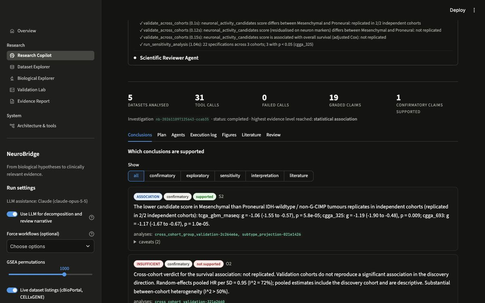

<title>NeuroBridge</title>
<meta name="claude:viewport-fit-sides" content="cover">
<meta name="description" content="NeuroBridge: an agentic AI research platform connecting biological hypotheses, multimodal data and reproducible evidence on neuron–glioma interactions in glioblastoma.">
<link rel="preconnect" href="https://fonts.googleapis.com">
<link rel="preconnect" href="https://fonts.gstatic.com" crossorigin>
<link rel="stylesheet" href="https://fonts.googleapis.com/css2?family=Newsreader:ital,opsz,wght@0,6..72,300;0,6..72,400;1,6..72,300&family=Hanken+Grotesk:wght@400;500;600&family=Geist+Mono:wght@400;500&display=swap">
<style>
/* Layout: a pinned WebGL stage carries an 8-stop scroll journey (cell → brain → tumour → cell → synapse → molecules → data → evidence),
   followed by editorial sections on a 12-column grid. Dark single-theme by design: a microscope field, not outer space.
   Colour is semantic: teal = neuron, violet = tumour, cyan = data, ivory = text and evidence. */
:root {
  --bg: #04060c; --bg-2: #080c17; --bg-3: #0d1322; --line: rgba(236, 231, 220, .13); --line-2: rgba(236, 231, 220, .24);
  --ivory: #ece7dc; --ivory-2: #bcb8ae; --ivory-3: #868791;
  --teal: #43c9b4; --cyan: #8fd3ee; --violet: #9d8cf2; --warn: #e6a35c;
  --serif: "Newsreader", "Iowan Old Style", Georgia, serif;
  --sans: "Hanken Grotesk", -apple-system, "Segoe UI", Helvetica, Arial, sans-serif;
  --mono: "Geist Mono", ui-monospace, "SF Mono", Menlo, monospace;
  color-scheme: dark;
}
* { box-sizing: border-box; }
html { scroll-behavior: smooth; }
body { background: var(--bg); color: var(--ivory); font-family: var(--sans); font-size: 1.02rem; line-height: 1.6; -webkit-font-smoothing: antialiased; overflow-x: hidden; }
::selection { background: rgba(67, 201, 180, .3); }
a { color: inherit; }
:focus-visible { outline: 1.5px solid var(--cyan); outline-offset: 3px; border-radius: 2px; }
.wrap { max-width: 1280px; margin: 0 auto; padding-left: max(20px, env(safe-area-inset-left, 0px)); padding-right: max(20px, env(safe-area-inset-right, 0px)); }
.serif { font-family: var(--serif); font-weight: 300; }
.mono { font-family: var(--mono); font-size: .74rem; letter-spacing: .02em; }
h1, h2, h3 { margin: 0; font-weight: 300; text-wrap: balance; }
h2 { font-family: var(--serif); font-size: clamp(2.1rem, 4.6vw, 3.8rem); line-height: 1.04; letter-spacing: -.012em; }
h3 { font-family: var(--sans); font-weight: 600; font-size: 1.05rem; letter-spacing: .005em; }
p { margin: 0 0 1em; }
.lead { font-size: clamp(1.08rem, 1.5vw, 1.24rem); line-height: 1.55; color: var(--ivory-2); max-width: 36em; }
.btn { display: inline-flex; align-items: center; gap: 10px; font-family: var(--sans); font-weight: 600; font-size: .95rem; padding: 13px 20px; border: 1px solid var(--ivory); color: var(--bg); background: var(--ivory); text-decoration: none; border-radius: 2px; cursor: pointer; transition: background .25s, color .25s; }
.btn:hover { background: transparent; color: var(--ivory); }
.btn.ghost { background: transparent; color: var(--ivory); border-color: var(--line-2); }
.btn.ghost:hover { border-color: var(--ivory); }
.btn svg { width: 14px; height: 14px; }

/* header */
.top { position: fixed; inset: 0 0 auto; z-index: 40; padding-top: env(safe-area-inset-top, 0px); transition: background .4s, border-color .4s; border-bottom: 1px solid transparent; }
.top.solid { background: rgba(4, 6, 12, .82); backdrop-filter: blur(10px); border-color: var(--line); }
.top .wrap { display: flex; align-items: center; justify-content: space-between; gap: 24px; height: 64px; }
.mark { display: flex; align-items: center; gap: 11px; text-decoration: none; }
.mark b { font-family: var(--sans); font-weight: 600; font-size: 1.02rem; letter-spacing: .01em; }
.nav { display: flex; gap: 26px; }
.nav a { font-size: .86rem; color: var(--ivory-2); text-decoration: none; }
.nav a:hover { color: var(--ivory); }
.top .btn { padding: 9px 14px; font-size: .84rem; }

/* journey */
#journey { position: relative; height: 900vh; }
.stage { position: sticky; top: 0; height: 100vh; height: 100svh; overflow: hidden; }
#gl { position: absolute; inset: 0; width: 100%; height: 100%; display: block; }
.vignette { position: absolute; inset: 0; pointer-events: none; background: radial-gradient(120% 90% at 62% 48%, transparent 40%, rgba(4, 6, 12, .55) 78%, var(--bg) 100%); }
.grain { position: absolute; inset: -50%; pointer-events: none; opacity: .05; background-image: url("data:image/svg+xml,%3Csvg xmlns='http://www.w3.org/2000/svg' width='160' height='160'%3E%3Cfilter id='n'%3E%3CfeTurbulence type='fractalNoise' baseFrequency='.9' numOctaves='2' stitchTiles='stitch'/%3E%3C/filter%3E%3Crect width='100%25' height='100%25' filter='url(%23n)'/%3E%3C/svg%3E"); }
.panel { position: absolute; left: max(20px, env(safe-area-inset-left, 0px)); bottom: 13vh; width: min(520px, 42vw); opacity: 0; transform: translateY(14px); transition: opacity .15s linear; pointer-events: none; }
.panel.on { pointer-events: auto; }
.panel .idx { display: flex; align-items: center; gap: 12px; margin-bottom: 18px; color: var(--ivory-3); }
.panel .idx b { color: var(--ivory); font-weight: 500; }
.panel h2 { font-size: clamp(1.9rem, 3.4vw, 3rem); margin-bottom: 18px; }
.panel p { color: var(--ivory-2); max-width: 32em; }
.tag { display: inline-flex; align-items: center; gap: 8px; font-family: var(--mono); font-size: .7rem; letter-spacing: .03em; color: var(--ivory-2); border: 1px solid var(--line-2); padding: 4px 9px; border-radius: 2px; }
.tag i { width: 6px; height: 6px; border-radius: 50%; background: var(--ivory-3); }
.tag[data-k="est"] i { background: var(--teal); } .tag[data-k="hyp"] i { background: var(--warn); } .tag[data-k="res"] i { background: var(--cyan); } .tag[data-k="con"] i { background: var(--violet); }
.hero-panel { left: 50%; transform: translateX(-50%); bottom: auto; top: 50%; width: min(1180px, calc(100% - 40px)); margin-top: -20px; translate: 0 -50%; }
.hero-panel .inner { max-width: 600px; }
.hero-panel .kick { font-family: var(--mono); font-size: .74rem; color: var(--ivory-2); margin-bottom: 26px; display: flex; gap: 10px; align-items: center; }
.hero-panel .kick span { width: 22px; height: 1px; background: var(--ivory-3); }
.hero-panel h1 { font-family: var(--serif); font-weight: 300; font-size: clamp(2.9rem, 6.6vw, 6.1rem); line-height: .98; letter-spacing: -.02em; margin-bottom: 26px; }
.hero-panel h1 em { font-style: italic; color: var(--ivory-2); }
.hero-panel .lead { margin-bottom: 34px; }
.ctas { display: flex; flex-wrap: wrap; gap: 12px; }
.scroll-cue { position: absolute; left: 50%; bottom: 26px; translate: -50% 0; display: flex; flex-direction: column; align-items: center; gap: 10px; color: var(--ivory-3); transition: opacity .3s; }
.scroll-cue i { width: 1px; height: 44px; background: linear-gradient(var(--ivory-2), transparent); position: relative; overflow: hidden; }
.scroll-cue i::after { content: ""; position: absolute; left: 0; top: -40%; width: 1px; height: 40%; background: var(--ivory); animation: cue 2.2s ease-in-out infinite; }
@keyframes cue { to { top: 110%; } }
.rail { position: absolute; right: max(20px, env(safe-area-inset-right, 0px)); top: 50%; translate: 0 -50%; display: grid; gap: 4px; }
.rail button { all: unset; cursor: pointer; display: grid; grid-template-columns: auto 18px; align-items: center; gap: 10px; justify-items: end; padding: 3px 0; color: var(--ivory-3); font-family: var(--mono); font-size: .68rem; }
.rail button span { opacity: 0; transition: opacity .25s; }
.rail button:hover span, .rail button:focus-visible span, .rail button.on span { opacity: 1; }
.rail button::after { content: ""; width: 18px; height: 1px; background: currentColor; transition: width .25s; justify-self: end; }
.rail button.on { color: var(--ivory); } .rail button.on::after { width: 28px; }
.notes { position: absolute; inset: 0; pointer-events: none; }
.note { position: absolute; pointer-events: auto; transform: translate(-50%, -50%); opacity: 0; transition: opacity .3s; }
.note button { all: unset; cursor: pointer; display: grid; place-items: center; width: 22px; height: 22px; }
.note button::before { content: ""; width: 7px; height: 7px; border-radius: 50%; border: 1px solid var(--ivory); background: rgba(4, 6, 12, .6); box-shadow: 0 0 0 5px rgba(236, 231, 220, .07); }
.note .card { position: absolute; left: 22px; top: 50%; translate: 0 -50%; width: 230px; padding: 10px 12px; background: rgba(8, 12, 23, .88); border: 1px solid var(--line-2); backdrop-filter: blur(6px); font-size: .82rem; line-height: 1.45; color: var(--ivory-2); }
.note .card b { display: block; color: var(--ivory); font-weight: 600; margin-bottom: 2px; font-size: .86rem; }
.note .card .tag { margin-top: 8px; }
.note .card .more { display: none; margin-top: 6px; }
.note.open .card .more, .note:hover .card .more, .note:focus-within .card .more { display: block; }
.note .lbl { position: absolute; left: 22px; top: 50%; translate: 0 -50%; white-space: nowrap; font-family: var(--mono); font-size: .7rem; color: var(--ivory-2); }
.note.left .card, .note.left .lbl { left: auto; right: 22px; text-align: right; }
.fallback-art { display: none; position: absolute; inset: 0; }
.no-webgl #gl { display: none; } .no-webgl .fallback-art { display: block; }

/* sections */
section.sec { padding-block: clamp(90px, 13vw, 170px); border-top: 1px solid var(--line); position: relative; }
.grid { display: grid; grid-template-columns: repeat(12, minmax(0, 1fr)); column-gap: clamp(16px, 2.4vw, 32px); }
.sec-k { grid-column: 1 / span 3; font-family: var(--mono); font-size: .74rem; color: var(--ivory-3); padding-top: 14px; }
.sec-h { grid-column: 4 / span 9; }
.sec-h .lead { margin-top: 22px; }
.sec-body { grid-column: 4 / span 9; margin-top: clamp(40px, 6vw, 72px); }
.cols { display: grid; grid-template-columns: repeat(3, minmax(0, 1fr)); gap: clamp(20px, 3vw, 44px); }
.cols > div { border-top: 1px solid var(--line-2); padding-top: 18px; }
.cols p { color: var(--ivory-2); font-size: .96rem; }
.status { display: grid; gap: 0; border-top: 1px solid var(--line-2); }
.status > div { display: grid; grid-template-columns: 210px minmax(0, 1fr); gap: 24px; padding: 20px 0; border-bottom: 1px solid var(--line); }
.status p { margin: 0; color: var(--ivory-2); }
.datagrid { display: grid; grid-template-columns: minmax(0, 1.25fr) minmax(0, 1fr); gap: clamp(24px, 4vw, 56px); align-items: start; }
.hexbox { border: 1px solid var(--line); background: var(--bg-2); padding: 16px; }
#hexmap { width: 100%; display: block; }
.seg { display: inline-flex; flex-wrap: wrap; border: 1px solid var(--line-2); }
.seg button { all: unset; cursor: pointer; font-size: .82rem; font-weight: 500; padding: 8px 12px; color: var(--ivory-2); }
.seg button[aria-pressed="true"] { background: var(--ivory); color: var(--bg); }
.seg button:focus-visible { outline: 1.5px solid var(--cyan); }
.key { display: flex; flex-wrap: wrap; gap: 6px 16px; font-family: var(--mono); font-size: .7rem; color: var(--ivory-3); margin-top: 12px; }
.key i { display: inline-block; width: 8px; height: 8px; border-radius: 50%; margin-right: 6px; }
table.man { width: 100%; border-collapse: collapse; font-size: .92rem; }
table.man th { text-align: left; font-family: var(--mono); font-weight: 400; font-size: .7rem; color: var(--ivory-3); padding: 0 12px 10px 0; border-bottom: 1px solid var(--line-2); }
table.man td { padding: 12px 12px 12px 0; border-bottom: 1px solid var(--line); vertical-align: top; color: var(--ivory-2); }
table.man td:first-child { color: var(--ivory); }
table.man td.n { text-align: right; font-variant-numeric: tabular-nums; white-space: nowrap; }
.flowbox { border-top: 1px solid var(--line-2); border-bottom: 1px solid var(--line-2); padding-block: 24px; overflow-x: auto; }
svg.fig { width: 100%; height: auto; display: block; overflow: visible; }
svg.fig text { font-family: var(--sans); font-size: 13px; fill: var(--ivory-2); }
svg.fig .t1 { fill: var(--ivory); font-weight: 600; }
svg.fig .m { font-family: var(--mono); font-size: 11px; fill: var(--ivory-3); }
.agent-detail { min-height: 5.5em; margin-top: 18px; color: var(--ivory-2); }
.agent-detail b { color: var(--ivory); }
.agent-detail code { font-family: var(--mono); font-size: .78rem; color: var(--cyan); }
.forest { border: 1px solid var(--line); background: var(--bg-2); padding: 20px 22px 16px; }
.forest .hd { display: flex; flex-wrap: wrap; gap: 12px 24px; justify-content: space-between; align-items: center; margin-bottom: 8px; }
.verdict { display: inline-flex; align-items: center; gap: 9px; font-weight: 600; font-size: .92rem; }
.verdict::before { content: ""; width: 8px; height: 8px; border-radius: 50%; background: var(--teal); }
.verdict.no::before { background: var(--violet); }
.ci, .pt { transition: all 1s cubic-bezier(.65, .05, .25, 1); }
.two { display: grid; grid-template-columns: minmax(0, 1fr) minmax(0, 1fr); gap: 20px; margin-top: 20px; }
.platform { display: grid; grid-template-columns: 240px minmax(0, 1fr); gap: clamp(20px, 3vw, 40px); align-items: start; }
.ptabs { display: grid; border-top: 1px solid var(--line-2); }
.ptabs button { all: unset; cursor: pointer; padding: 16px 0; border-bottom: 1px solid var(--line); display: grid; gap: 4px; }
.ptabs button b { font-weight: 600; color: var(--ivory-2); }
.ptabs button span { font-size: .84rem; color: var(--ivory-3); }
.ptabs button[aria-selected="true"] b { color: var(--ivory); }
.ptabs button[aria-selected="true"] { box-shadow: inset 2px 0 0 var(--teal); padding-left: 14px; }
.shot { border: 1px solid var(--line-2); background: var(--bg-2); }
.shot .bar { display: flex; align-items: center; gap: 6px; padding: 9px 12px; border-bottom: 1px solid var(--line); }
.shot .bar i { width: 8px; height: 8px; border-radius: 50%; background: var(--line-2); }
.shot .bar span { margin-left: 10px; font-family: var(--mono); font-size: .7rem; color: var(--ivory-3); }
.shot img { display: block; width: 100%; height: auto; aspect-ratio: 1200 / 750; object-fit: cover; object-position: top; }
.research { display: grid; border-top: 1px solid var(--line-2); }
.research > div { display: grid; grid-template-columns: minmax(0, 1fr) minmax(0, 1.2fr) 180px; gap: 28px; padding: 24px 0; border-bottom: 1px solid var(--line); align-items: start; }
.research .q { font-family: var(--serif); font-size: 1.28rem; line-height: 1.3; }
.research p { margin: 0; color: var(--ivory-2); font-size: .95rem; }
.final { text-align: left; padding-block: clamp(110px, 16vw, 200px); border-top: 1px solid var(--line); position: relative; overflow: hidden; }
.final h2 { font-size: clamp(2.6rem, 6.5vw, 5.6rem); max-width: 12em; }
.final .ctas { margin-top: 38px; }
.cmd { margin-top: 28px; display: flex; flex-wrap: wrap; align-items: center; gap: 10px; max-width: 760px; border: 1px solid var(--line-2); padding: 12px 14px; background: var(--bg-2); }
.cmd code { font-family: var(--mono); font-size: .8rem; color: var(--ivory-2); overflow-x: auto; white-space: nowrap; flex: 1 1 360px; min-width: 0; }
.cmd button { all: unset; cursor: pointer; font-size: .8rem; font-weight: 600; color: var(--ivory); border: 1px solid var(--line-2); padding: 5px 10px; }
footer { border-top: 1px solid var(--line); padding-block: 44px 64px; color: var(--ivory-3); font-size: .86rem; }
footer .grid > div { grid-column: span 4; }
footer b { display: block; color: var(--ivory); font-weight: 600; margin-bottom: 6px; }

@media (max-width: 900px) {
  .nav { display: none; }
  .panel { left: 20px; right: 20px; width: auto; bottom: 7vh; padding: 18px 0 0; }
  .panel::before { content: ""; position: absolute; inset: -60px -20px -40px; background: linear-gradient(transparent, rgba(4, 6, 12, .92) 38%); z-index: -1; }
  .hero-panel { top: auto; bottom: 9vh; translate: 0 0; left: 20px; transform: none; width: auto; margin: 0; }
  .hero-panel h1 { font-size: clamp(2.5rem, 11vw, 3.6rem); }
  .rail, .notes { display: none; }
  .sec-k, .sec-h, .sec-body { grid-column: 1 / -1; }
  .cols, .datagrid, .two, .platform { grid-template-columns: minmax(0, 1fr); }
  .status > div, .research > div { grid-template-columns: minmax(0, 1fr); gap: 8px; }
  footer .grid > div { grid-column: 1 / -1; margin-bottom: 18px; }
  .scroll-cue { display: none; }
}
@media (prefers-reduced-motion: reduce) {
  html { scroll-behavior: auto; }
  .scroll-cue i::after { animation: none; }
  .ci, .pt, .panel { transition: none !important; }
}
</style>

<header class="top" id="top">
  <div class="wrap">
    <a class="mark" href="#journey" aria-label="NeuroBridge, back to start">
      <svg width="30" height="20" viewBox="0 0 30 20" aria-hidden="true"><circle cx="6" cy="10" r="4.4" fill="none" stroke="#43c9b4" stroke-width="1.5"/><path d="M10.4 10h7.2" stroke="#ece7dc" stroke-width="1.2" stroke-dasharray="1.6 1.6"/><circle cx="23.6" cy="10" r="5.4" fill="none" stroke="#9d8cf2" stroke-width="1.5"/><circle cx="23.6" cy="10" r="1.8" fill="#9d8cf2"/></svg>
      <b>NeuroBridge</b>
    </a>
    <nav class="nav" aria-label="Sections">
      <a href="#science">Science</a><a href="#data">Data</a><a href="#intelligence">Intelligence</a><a href="#validation">Validation</a><a href="#platform">Platform</a><a href="#research">Research</a>
    </nav>
    <a class="btn" href="https://stefaniazoibb-neurobridge.streamlit.app">Launch the platform</a>
  </div>
</header>

<main>
<div id="journey">
  <div class="stage" id="stage">
    <canvas id="gl" aria-hidden="true"></canvas>
    <svg class="fallback-art" viewBox="0 0 1200 800" preserveAspectRatio="xMidYMid slice" aria-hidden="true">
      <defs><radialGradient id="fbm" cx="50%" cy="45%" r="55%"><stop offset="0" stop-color="#9d8cf2" stop-opacity=".25"/><stop offset=".7" stop-color="#43c9b4" stop-opacity=".08"/><stop offset="1" stop-color="#04060c" stop-opacity="0"/></radialGradient></defs>
      <path d="M760 210c90-20 190 40 210 140s-20 170-90 220-200 60-270 10-110-140-80-220 140-130 230-150z" fill="url(#fbm)" stroke="#8fd3ee" stroke-opacity=".5"/>
      <ellipse cx="770" cy="400" rx="80" ry="66" fill="#9d8cf2" fill-opacity=".22" stroke="#9d8cf2" stroke-opacity=".6"/>
    </svg>
    <div class="vignette"></div>
    <div class="grain"></div>
    <div class="notes" id="notes"></div>

    <div class="panel hero-panel" data-scene="0">
      <div class="inner">
        <p class="kick"><span></span>NeuroBridge · agentic research platform</p>
        <h1>Biology is complex.<br><em>Discovery shouldn't be.</em></h1>
        <p class="lead">An agentic AI research platform connecting biological hypotheses, multimodal data and reproducible evidence.</p>
        <div class="ctas">
          <a class="btn" href="#platform">Explore NeuroBridge</a>
          <a class="btn ghost" href="#" data-goto="1">Discover the science <svg viewBox="0 0 14 14" fill="none" stroke="currentColor" stroke-width="1.5" aria-hidden="true"><path d="M7 2v10M3 8l4 4 4-4"/></svg></a>
        </div>
      </div>
    </div>
    <div class="panel" data-scene="1"><p class="idx mono"><b>01</b> The brain</p><h2>Every discovery begins with a biological question.</h2><p>A glioblastoma in the temporal lobe. Where it grows, and what it grows into, shapes the questions worth asking.</p><span class="tag" data-k="con"><i></i>Conceptual representation</span></div>
    <div class="panel" data-scene="2"><p class="idx mono"><b>02</b> The tumour</p><h2>Understanding disease requires understanding its biological environment.</h2><p>Glioblastoma infiltrates living brain. Neurons, blood vessels, glia and immune cells sit inside and around the tumour.</p><span class="tag" data-k="con"><i></i>Conceptual representation</span></div>
    <div class="panel" data-scene="3"><p class="idx mono"><b>03</b> The cell</p><h2>Inside every tumour lies a complex network of biological interactions.</h2><p>A glioblastoma cell: nucleus, organelles, and long membrane protrusions called tumour microtubes that connect cells into networks.</p><span class="tag" data-k="est"><i></i>Established structures · stylised rendering</span></div>
    <div class="panel" data-scene="4"><p class="idx mono"><b>04</b> Neuron–tumour signalling</p><h2>Neurons and tumour cells do not exist in isolation.</h2><p>In mouse and patient-derived models, neurons form glutamatergic synapses onto glioma cells and release growth signals such as neuroligin-3. Whether this is visible in patients is the hypothesis NeuroBridge tests.</p><span class="tag" data-k="hyp"><i></i>Shown in experimental models · hypothesis in patients</span></div>
    <div class="panel" data-scene="5"><p class="idx mono"><b>05</b> Molecular complexity</p><h2>Biological complexity generates enormous amounts of data.</h2><p>Thousands of genes, transcripts and protein interactions vary from cell to cell and from patient to patient.</p><span class="tag" data-k="con"><i></i>Conceptual representation</span></div>
    <div class="panel" data-scene="6"><p class="idx mono"><b>06</b> Computational discovery</p><h2>NeuroBridge connects biological signals across multiple scales.</h2><p>Bulk RNA-seq, single cells, spatial transcriptomics, survival and the literature, analysed by seven agents in one reproducible workflow.</p><span class="tag" data-k="res"><i></i>Real datasets · schematic views</span></div>
    <div class="panel" data-scene="7"><p class="idx mono"><b>07</b> Scientific evidence</p><h2>From biological hypotheses to reproducible evidence.</h2><p>Every claim is graded. The subtype difference replicates in two independent cohorts, then disappears once normal brain is controlled for. Survival does not replicate.</p><div class="ctas" style="margin-top:22px"><a class="btn" href="#science">Start exploring</a><span class="tag" data-k="res"><i></i>Results from the reference run</span></div></div>

    <div class="scroll-cue mono" id="cue"><span>Scroll to enter</span><i></i></div>
    <nav class="rail" id="rail" aria-label="Journey scenes"></nav>
  </div>
</div>

<section class="sec" id="science">
  <div class="wrap grid">
    <p class="sec-k">01 — The scientific question</p>
    <div class="sec-h">
      <h2>Do neurons shape glioblastoma in patients, or only in the lab?</h2>
      <p class="lead">Over the last decade, experiments have shown that neuronal activity drives glioma growth. The open question for drug discovery is translational: is that coupling visible in patient data, does it define patient subgroups, and does it relate to outcome?</p>
    </div>
    <div class="sec-body">
      <div class="status">
        <div><span class="tag" data-k="est"><i></i>Established in models</span><p>Neurons form AMPA-receptor synapses onto glioma cells and secrete neuroligin-3; both promote tumour growth in mouse and patient-derived xenograft models (Venkatesh et al. 2015, 2019; Venkataramani et al. 2019).</p></div>
        <div><span class="tag" data-k="est"><i></i>Reported in patients</span><p>Glioblastomas that are more functionally connected to surrounding circuits are associated with shorter survival (Krishna et al. 2023).</p></div>
        <div><span class="tag" data-k="hyp"><i></i>Hypothesis under test</span><p>Expression of neuron–glioma signalling genes marks distinct tumour subgroups and predicts survival, independently of how much normal brain each sample contains.</p></div>
        <div><span class="tag" data-k="res"><i></i>What NeuroBridge found</span><p>A reproducible subgroup difference that is largely explained by normal-brain content, and no replicated survival association. The receptor genes are present in tumour tissue in one spatial section: a lead, not a conclusion.</p></div>
      </div>
    </div>
  </div>
</section>

<section class="sec" id="data">
  <div class="wrap grid">
    <p class="sec-k">02 — The data</p>
    <div class="sec-h">
      <h2>Five modalities, one reproducible workflow.</h2>
      <p class="lead">Public patient cohorts for discovery and validation, single cells for localisation, a tissue section for context. Every file is downloaded, hashed and versioned.</p>
    </div>
    <div class="sec-body datagrid">
      <div>
        <div class="hexbox">
          <canvas id="hexmap" role="img" aria-label="Map of 3,462 Visium spots from a glioblastoma section, coloured by the selected layer"></canvas>
          <div class="key" id="hexkey"></div>
        </div>
        <div style="display:flex;flex-wrap:wrap;gap:12px 20px;align-items:center;margin-top:16px">
          <div class="seg" id="hexseg" role="group" aria-label="Map layer">
            <button data-layer="domains" aria-pressed="true">Domains</button><button data-layer="neuron" aria-pressed="false">Neurons</button><button data-layer="SLC17A7" aria-pressed="false">SLC17A7</button><button data-layer="GRIA2" aria-pressed="false">GRIA2</button>
          </div>
        </div>
        <p class="lead" id="hexnote" style="font-size:1rem;margin-top:16px"></p>
      </div>
      <div>
        <table class="man">
          <thead><tr><th>Dataset</th><th>n</th><th>Role</th></tr></thead>
          <tbody>
            <tr><td>TCGA-GBM RNA-seq</td><td class="n">154 tumours</td><td>discovery cohort</td></tr>
            <tr><td>CGGA mRNAseq 325</td><td class="n">85 tumours</td><td>independent validation</td></tr>
            <tr><td>CGGA mRNAseq 693</td><td class="n">140 tumours</td><td>independent validation</td></tr>
            <tr><td>GSE84465 single cells</td><td class="n">3,589 cells</td><td>cell-type localisation</td></tr>
            <tr><td>10x Visium section</td><td class="n">3,462 spots</td><td>tissue context, one patient</td></tr>
            <tr><td>Europe PMC</td><td class="n">45 records</td><td>verified literature</td></tr>
          </tbody>
        </table>
        <p class="mono" style="margin-top:14px;color:var(--ivory-3)">Primary tumours with expression and survival. No synthetic patient data anywhere in the platform.</p>
      </div>
    </div>
  </div>
</section>

<section class="sec" id="intelligence">
  <div class="wrap grid">
    <p class="sec-k">03 — The intelligence</p>
    <div class="sec-h">
      <h2>Seven agents. One audit trail.</h2>
      <p class="lead">An orchestrator runs specialised agents in order. Each chooses typed tools, and every call is logged with its inputs, outputs and limitations. The language model plans and critiques; it never produces a number.</p>
    </div>
    <div class="sec-body">
      <div class="flowbox"><svg class="fig" id="flow" viewBox="0 0 1000 150" role="img" aria-label="Pipeline of seven agents. Select an agent to see its tools."></svg></div>
      <div class="agent-detail" id="agentDetail" aria-live="polite"></div>
    </div>
  </div>
</section>

<section class="sec" id="validation">
  <div class="wrap grid">
    <p class="sec-k">04 — The validation</p>
    <div class="sec-h">
      <h2>A result counts only when it survives an independent cohort.</h2>
      <p class="lead">Effect sizes with confidence intervals, false-discovery control, Cox models with assumption checks, and a composition control for normal brain. A single cohort is never called validated.</p>
    </div>
    <div class="sec-body">
      <div class="forest">
        <div class="hd">
          <h3>Mesenchymal vs Proneural tumours · IDH-wildtype</h3>
          <div class="seg" role="group" aria-label="Score"><button id="segRaw" aria-pressed="true">Candidate score</button><button id="segAdj" aria-pressed="false">Adjusted for normal brain</button></div>
        </div>
        <svg class="fig" id="subChart" viewBox="0 0 900 236" role="img" aria-label="Forest plot of Hedges g in three cohorts"></svg>
        <p class="verdict" id="subVerdict" style="margin:6px 0 0">Replicated in 2 of 2 independent cohorts</p>
      </div>
      <div class="two">
        <div class="forest"><div class="hd"><h3>Correlation with neuron markers</h3></div><svg class="fig" id="compChart" viewBox="0 0 420 186" role="img" aria-label="Spearman correlation: TCGA 0.71, CGGA-325 0.67, CGGA-693 0.81"></svg></div>
        <div class="forest"><div class="hd"><h3>Overall survival</h3><span class="verdict no">Not replicated</span></div><svg class="fig" id="survChart" viewBox="0 0 420 186" role="img" aria-label="Hazard ratios per SD: TCGA 1.16, CGGA-325 0.75, CGGA-693 0.95"></svg></div>
      </div>
      <p class="mono" style="margin-top:16px;color:var(--ivory-3)">Hedges' g and Cox hazard ratios with 95% confidence intervals. CGGA subtypes come from a classifier trained on TCGA alone, with all candidate genes excluded from its features (balanced accuracy 0.82).</p>
    </div>
  </div>
</section>

<section class="sec" id="platform">
  <div class="wrap grid">
    <p class="sec-k">05 — The platform</p>
    <div class="sec-h">
      <h2>A working research application, not a mock-up.</h2>
      <p class="lead">Five modules in one Streamlit application, backed by a tested Python package. These screenshots come from a live run on the public data.</p>
    </div>
    <div class="sec-body platform">
      <div class="ptabs" role="tablist" aria-label="Platform modules" id="ptabs">
        <button role="tab" aria-selected="true" aria-controls="shotImg" data-i="0"><b>Research Copilot</b><span>Question in, graded evidence out</span></button>
        <button role="tab" aria-selected="false" aria-controls="shotImg" data-i="1"><b>Validation Lab</b><span>Replication, sensitivity, reproducibility</span></button>
        <button role="tab" aria-selected="false" aria-controls="shotImg" data-i="2"><b>Biological Explorer</b><span>Genes, cells and tissue</span></button>
        <button role="tab" aria-selected="false" aria-controls="shotImg" data-i="3"><b>Evidence Report</b><span>Markdown and PDF, every claim tagged</span></button>
      </div>
      <figure class="shot" style="margin:0">
        <div class="bar"><i></i><i></i><i></i><span id="shotUrl">stefaniazoibb-neurobridge.streamlit.app/copilot</span></div>
        
      </figure>
    </div>
  </div>
</section>

<section class="sec" id="research">
  <div class="wrap grid">
    <p class="sec-k">06 — The research</p>
    <div class="sec-h"><h2>Questions it has answered.</h2></div>
    <div class="sec-body">
      <div class="research">
        <div><p class="q">Is neuronal signalling associated with glioblastoma subtypes and survival?</p><p>The score is lower in Mesenchymal than Proneural tumours in all three cohorts (Hedges' g −1.06 to −1.19), but the difference does not survive adjustment for normal-brain content. Survival does not replicate.</p><span class="tag" data-k="res"><i></i>Association, confounded</span></div>
        <div><p class="q">Are NLGN3 or BDNF prognostic in IDH-wildtype glioblastoma after adjusting for age and MGMT?</p><p>Neither gene replicates: hazard ratios per SD sit between 0.81 and 1.14 with inconsistent directions across the three cohorts.</p><span class="tag" data-k="res"><i></i>Not replicated</span></div>
        <div><p class="q">Where are the receptor genes in tissue?</p><p>In one Visium section, presynaptic SLC17A7 follows neuron-rich tissue while GRIA2 spreads through tumour regions (ρ = −0.03 with neuronal content). GAP43 rises next to neurons.</p><span class="tag" data-k="hyp"><i></i>Exploratory, one patient</span></div>
      </div>
    </div>
  </div>
</section>

<section class="final" id="start">
  <div class="wrap">
    <p class="mono" style="color:var(--ivory-3);margin-bottom:22px">NeuroBridge</p>
    <h2 class="serif">Explore the biology. Follow the evidence.</h2>
    <div class="ctas">
      <a class="btn" href="https://stefaniazoibb-neurobridge.streamlit.app">Launch the platform</a>
      <a class="btn ghost" href="https://github.com/stefaniazoibb/neurobridge">View the code on GitHub</a>
    </div>
    <div class="cmd"><code id="cmd">git clone https://github.com/stefaniazoibb/neurobridge && cd neurobridge && pip install -e ".[llm]" && streamlit run app/streamlit_app.py</code><button id="copy" type="button">Copy</button></div>
    <p class="mono" style="color:var(--ivory-3);margin-top:12px">Hosted on Streamlit Community Cloud. To run it yourself, use the command above.</p>
  </div>
</section>
</main>

<footer>
  <div class="wrap grid">
    <div><b>NeuroBridge</b>Built by Stefania Zoi. Research exploration only, not for diagnosis or treatment.</div>
    <div><b>Data</b>TCGA-GBM via UCSC Xena · Chinese Glioma Genome Atlas · GEO GSE84465 · 10x Genomics Visium · Europe PMC.</div>
    <div><b>Visuals</b>Biological scenes are conceptual renderings unless labelled as data. Spatial maps and charts show real results.</div>
  </div>
</footer>

<script src="https://cdnjs.cloudflare.com/ajax/libs/three.js/0.158.0/three.min.js"></script>
<script>/*SPATIAL_DATA*/</script>
<script>
(() => {
"use strict";
const reduce = matchMedia("(prefers-reduced-motion: reduce)").matches;
const mobile = matchMedia("(max-width: 900px)").matches;
const $ = (s) => document.querySelector(s);
const clamp = (x, a, b) => Math.min(b, Math.max(a, x));
const smooth = (a, b, x) => { const t = clamp((x - a) / (b - a), 0, 1); return t * t * (3 - 2 * t); };
const mix = (a, b, t) => a + (b - a) * t;
let seed = 7; const rnd = () => (seed = (seed * 16807) % 2147483647) / 2147483647;
const gauss = () => { let u = 0, v = 0; while (!u) u = rnd(); while (!v) v = rnd(); return Math.sqrt(-2 * Math.log(u)) * Math.cos(2 * Math.PI * v); };

/* ---------- 3D noise (Perlin) for procedural shapes ---------- */
const P = new Uint8Array(512); { const p = [...Array(256).keys()]; for (let i = 255; i > 0; i--) { const j = Math.floor(rnd() * (i + 1)); [p[i], p[j]] = [p[j], p[i]]; } for (let i = 0; i < 512; i++) P[i] = p[i & 255]; }
const fade = t => t * t * t * (t * (t * 6 - 15) + 10);
const grad = (h, x, y, z) => { const u = (h & 15) < 8 ? x : y, v = (h & 15) < 4 ? y : ((h & 15) === 12 || (h & 15) === 14) ? x : z; return ((h & 1) ? -u : u) + ((h & 2) ? -v : v); };
function noise(x, y, z) {
  const X = Math.floor(x) & 255, Y = Math.floor(y) & 255, Z = Math.floor(z) & 255; x -= Math.floor(x); y -= Math.floor(y); z -= Math.floor(z);
  const u = fade(x), v = fade(y), w = fade(z), A = P[X] + Y, AA = P[A] + Z, AB = P[A + 1] + Z, B = P[X + 1] + Y, BA = P[B] + Z, BB = P[B + 1] + Z;
  return mix(mix(mix(grad(P[AA], x, y, z), grad(P[BA], x - 1, y, z), u), mix(grad(P[AB], x, y - 1, z), grad(P[BB], x - 1, y - 1, z), u), v),
             mix(mix(grad(P[AA + 1], x, y, z - 1), grad(P[BA + 1], x - 1, y, z - 1), u), mix(grad(P[AB + 1], x, y - 1, z - 1), grad(P[BB + 1], x - 1, y - 1, z - 1), u), v), w);
}

/* ---------- palette ---------- */
const COL = { teal: [.26, .79, .71], cyan: [.56, .83, .93], violet: [.62, .55, .95], ivory: [.93, .91, .86], dim: [.42, .45, .55], warm: [.9, .64, .36] };
const scaleC = (c, k) => [c[0] * k, c[1] * k, c[2] * k];

/* ---------- hex map + charts (2D, used below the fold; work without WebGL) ---------- */
const D = window.NB_SPATIAL;
const raw = Uint8Array.from(atob(D.b64), c => c.charCodeAt(0)), NS = D.n;
const ROW = raw.subarray(0, NS), COLI = raw.subarray(NS, 2 * NS), DOM = raw.subarray(2 * NS, 3 * NS), LAY = {};
D.layers.forEach((k, i) => LAY[k] = raw.subarray((3 + i) * NS, (4 + i) * NS));

/* ============================================================ WEBGL JOURNEY */
const SCENES = ["Cell", "Brain", "Tumour", "Cell", "Synapse", "Molecules", "Data", "Evidence"];
const NSC = SCENES.length;
let webgl = !!window.THREE;
try { const t = document.createElement("canvas"); webgl = webgl && !!(t.getContext("webgl2") || t.getContext("webgl")); } catch (e) { webgl = false; }
if (!webgl) document.documentElement.classList.add("no-webgl");

const panels = [...document.querySelectorAll(".panel")];
const rail = $("#rail");
SCENES.forEach((s, i) => { const b = document.createElement("button"); b.innerHTML = `<span>${String(i).padStart(2, "0")} ${i === 0 ? "Start" : s}</span>`; b.setAttribute("aria-label", `Go to scene ${i}: ${i === 0 ? "start" : s}`); b.onclick = () => goto(i); rail.appendChild(b); });
const railBtns = [...rail.children];
const journey = $("#journey");
function goto(i) { const top = journey.offsetTop + (journey.offsetHeight - innerHeight) * (i / (NSC - 1)); scrollTo({ top, behavior: reduce ? "auto" : "smooth" }); }
document.querySelectorAll("[data-goto]").forEach(a => a.addEventListener("click", e => { e.preventDefault(); goto(+a.dataset.goto); }));
const target = () => clamp((scrollY - journey.offsetTop) / Math.max(1, journey.offsetHeight - innerHeight), 0, 1);
let prog = target(), progSm = prog;

function updatePanels(s) {
  panels.forEach(p => { const i = +p.dataset.scene, d = Math.abs(s - i); const o = clamp(1 - (d - 0.12) * 3.2, 0, 1); p.style.opacity = o; p.style.transform = i === 0 ? "" : `translateY(${(s - i) * -36}px)`; p.classList.toggle("on", o > .5); if (i === 0) p.style.translate = mobile ? "0 0" : `0 calc(-50% + ${-s * 60}px)`; });
  railBtns.forEach((b, i) => b.classList.toggle("on", Math.round(s) === i));
  $("#cue").style.opacity = clamp(1 - s * 4, 0, 1);
  $("#top").classList.toggle("solid", scrollY > journey.offsetTop + journey.offsetHeight - innerHeight * 1.1 || s > .35);
}

if (webgl) {
  const T = THREE;
  const canvas = $("#gl");
  const renderer = new T.WebGLRenderer({ canvas, antialias: !mobile, alpha: false, powerPreference: "high-performance" });
  renderer.setClearColor(0x04060c, 1);
  const DPR = Math.min(mobile ? 1.5 : 1.75, devicePixelRatio || 1);
  renderer.setPixelRatio(DPR);
  const scene = new T.Scene();
  const camera = new T.PerspectiveCamera(42, 1, 0.05, 80);

  /* ----- shared GLSL ----- */
  const SNOISE = `
  vec3 mod289(vec3 x){return x-floor(x*(1./289.))*289.;} vec4 mod289(vec4 x){return x-floor(x*(1./289.))*289.;}
  vec4 permute(vec4 x){return mod289(((x*34.)+1.)*x);} vec4 taylorInvSqrt(vec4 r){return 1.79284291400159-.85373472095314*r;}
  float snoise(vec3 v){const vec2 C=vec2(1./6.,1./3.);const vec4 D=vec4(0.,.5,1.,2.);vec3 i=floor(v+dot(v,C.yyy));vec3 x0=v-i+dot(i,C.xxx);
  vec3 g=step(x0.yzx,x0.xyz);vec3 l=1.-g;vec3 i1=min(g.xyz,l.zxy);vec3 i2=max(g.xyz,l.zxy);vec3 x1=x0-i1+C.xxx;vec3 x2=x0-i2+C.yyy;vec3 x3=x0-D.yyy;
  i=mod289(i);vec4 p=permute(permute(permute(i.z+vec4(0.,i1.z,i2.z,1.))+i.y+vec4(0.,i1.y,i2.y,1.))+i.x+vec4(0.,i1.x,i2.x,1.));
  float n_=.142857142857;vec3 ns=n_*D.wyz-D.xzx;vec4 j=p-49.*floor(p*ns.z*ns.z);vec4 x_=floor(j*ns.z);vec4 y_=floor(j-7.*x_);
  vec4 x=x_*ns.x+ns.yyyy;vec4 y=y_*ns.x+ns.yyyy;vec4 h=1.-abs(x)-abs(y);vec4 b0=vec4(x.xy,y.xy);vec4 b1=vec4(x.zw,y.zw);
  vec4 s0=floor(b0)*2.+1.;vec4 s1=floor(b1)*2.+1.;vec4 sh=-step(h,vec4(0.));vec4 a0=b0.xzyw+s0.xzyw*sh.xxyy;vec4 a1=b1.xzyw+s1.xzyw*sh.zzww;
  vec3 p0=vec3(a0.xy,h.x);vec3 p1=vec3(a0.zw,h.y);vec3 p2=vec3(a1.xy,h.z);vec3 p3=vec3(a1.zw,h.w);
  vec4 norm=taylorInvSqrt(vec4(dot(p0,p0),dot(p1,p1),dot(p2,p2),dot(p3,p3)));p0*=norm.x;p1*=norm.y;p2*=norm.z;p3*=norm.w;
  vec4 m=max(.6-vec4(dot(x0,x0),dot(x1,x1),dot(x2,x2),dot(x3,x3)),0.);m=m*m;return 42.*dot(m*m,vec4(dot(p0,x0),dot(p1,x1),dot(p2,x2),dot(p3,x3)));}`;

  /* ----- membrane material (cell, nucleus, organelles, microtubes) ----- */
  function membrane(o) {
    return new T.ShaderMaterial({
      transparent: true, depthWrite: false, side: o.side || T.FrontSide, blending: T.NormalBlending,
      uniforms: { uTime: { value: 0 }, uAlpha: { value: 1 }, uAmp: { value: o.amp }, uFreq: { value: o.freq }, uSpeed: { value: o.speed }, uInner: { value: new T.Color(...o.inner) }, uRim: { value: new T.Color(...o.rim) }, uIri: { value: new T.Color(...o.iri) }, uLight: { value: new T.Vector3(.4, .6, 1).normalize() }, uHit: { value: new T.Vector3(9, 9, 9) }, uHitK: { value: 0 }, uFill: { value: o.fill }, uProtrude: { value: o.protrude ? 1 : 0 } },
      vertexShader: SNOISE + `
        uniform float uTime,uAmp,uFreq,uSpeed,uHitK,uProtrude; uniform vec3 uHit;
        varying vec3 vN; varying vec3 vW; varying float vNz;
        const vec3 D1=normalize(vec3(.9,.35,.2)); const vec3 D2=normalize(vec3(-.7,.6,-.3)); const vec3 D3=normalize(vec3(-.2,-.85,.45)); const vec3 D4=normalize(vec3(.3,-.3,-.9));
        float disp(vec3 p){ vec3 n=normalize(p); float t=uTime*uSpeed;
          float d=snoise(n*uFreq+vec3(t,t*.7,-t))*uAmp + snoise(n*uFreq*2.4-vec3(t*.6))*uAmp*.12;
          d+=uProtrude*(pow(max(dot(n,D1),0.),26.)*.42+pow(max(dot(n,D2),0.),30.)*.34+pow(max(dot(n,D3),0.),34.)*.3+pow(max(dot(n,D4),0.),40.)*.24);
          d+=uHitK*.09*exp(-12.*dot(n-uHit,n-uHit)); return d; }
        void main(){ vec3 p=position; vec3 n=normalize(p);
          vec3 t1=normalize(cross(n,vec3(0.,1.,.01))); vec3 t2=normalize(cross(n,t1)); float e=.012;
          vec3 p0=p+n*disp(p); vec3 pa=(p+t1*e); pa+=normalize(pa)*disp(pa); vec3 pb=(p+t2*e); pb+=normalize(pb)*disp(pb);
          vec3 nn=normalize(cross(pa-p0,pb-p0)); if(dot(nn,n)<0.) nn=-nn;
          vec4 w=modelMatrix*vec4(p0,1.); vW=w.xyz; vN=normalize(mat3(modelMatrix)*nn); vNz=disp(p);
          gl_Position=projectionMatrix*viewMatrix*w; }`,
      fragmentShader: `
        uniform vec3 uInner,uRim,uIri,uLight; uniform float uAlpha,uFill;
        varying vec3 vN; varying vec3 vW; varying float vNz;
        void main(){ vec3 v=normalize(cameraPosition-vW); vec3 n=normalize(vN); if(!gl_FrontFacing) n=-n;
          float fr=pow(1.-abs(dot(n,v)),3.4); float dif=max(dot(n,uLight),0.); vec3 h=normalize(uLight+v); float sp=pow(max(dot(n,h),0.),48.);
          vec3 c=mix(uInner,uRim,fr); c+=uIri*.22*(.5+.5*sin(vNz*28.+fr*5.)); c*=.7+.35*dif; c+=vec3(.95,.93,.88)*sp*.22;
          float a=uAlpha*(uFill+(1.-uFill)*fr+sp*.15); gl_FragColor=vec4(c,clamp(a,0.,1.)); }`
    });
  }

  /* ----- the glioblastoma cell ----- */
  const cell = new T.Group(); scene.add(cell);
  const DET = mobile ? 72 : 120;
  const memGeo = new T.IcosahedronGeometry(1, DET);
  const memFront = membrane({ amp: .075, freq: 1.2, speed: .08, inner: [.05, .08, .15], rim: [.62, .9, .95], iri: [.62, .5, .95], fill: .03, protrude: true });
  const memBack = membrane({ amp: .075, freq: 1.2, speed: .08, inner: [.04, .05, .1], rim: [.3, .42, .7], iri: [.4, .35, .8], fill: .02, protrude: true, side: T.BackSide });
  const memB = new T.Mesh(memGeo, memBack), memF = new T.Mesh(memGeo, memFront); memB.renderOrder = 1; memF.renderOrder = 5; cell.add(memB, memF);
  const nucMat = membrane({ amp: .06, freq: 2, speed: .05, inner: [.3, .22, .55], rim: [.82, .74, 1], iri: [.43, .82, .78], fill: .45, protrude: false });
  const nucleus = new T.Mesh(new T.IcosahedronGeometry(.36, mobile ? 40 : 64), nucMat); nucleus.position.set(.08, .04, 0); nucleus.renderOrder = 3; cell.add(nucleus);
  const nucleoli = new T.Group(); [[.12, .1, .12, .07], [-.05, -.05, .16, .05]].forEach(([x, y, z, r]) => { const m = new T.Mesh(new T.SphereGeometry(r, 24, 16), new T.MeshBasicMaterial({ color: 0xd9d0ff, transparent: true, opacity: .55, depthWrite: false })); m.position.set(x + .08, y + .04, z); nucleoli.add(m); }); cell.add(nucleoli);
  const orgMat = membrane({ amp: .12, freq: 3, speed: .1, inner: [.12, .36, .34], rim: [.5, .95, .85], iri: [.6, .9, .9], fill: .35, protrude: false });
  const ORG = mobile ? 14 : 26, organelles = new T.InstancedMesh(new T.IcosahedronGeometry(1, 12), orgMat, ORG); organelles.renderOrder = 4;
  { const m = new T.Matrix4(), q = new T.Quaternion(), s = new T.Vector3(), p = new T.Vector3();
    for (let i = 0; i < ORG; i++) { let v; do { v = new T.Vector3(rnd() * 2 - 1, rnd() * 2 - 1, rnd() * 2 - 1); } while (v.length() > 1 || v.length() < .55); v.multiplyScalar(.78); p.copy(v); q.setFromEuler(new T.Euler(rnd() * 3, rnd() * 3, rnd() * 3)); s.set(.07 + rnd() * .03, .028, .028); m.compose(p, q, s); organelles.setMatrixAt(i, m); } }
  cell.add(organelles);
  // tumour microtubes: thin tubes leaving the protrusions
  const tubeMat = membrane({ amp: .02, freq: 6, speed: .2, inner: [.2, .3, .4], rim: [.62, .9, .95], iri: [.62, .5, .95], fill: .35, protrude: false });
  const TM = new T.Group(); cell.add(TM);
  [[.9, .35, .2], [-.7, .6, -.3], [-.2, -.85, .45], [.3, -.3, -.9]].forEach((d, k) => {
    const dir = new T.Vector3(...d).normalize(), pts = [];
    for (let i = 0; i <= 5; i++) { const r = 1.08 + i * .22; const w = new T.Vector3(Math.sin(i * .9 + k) * .08, Math.cos(i * .7 + k) * .08, 0); pts.push(dir.clone().multiplyScalar(r).add(w)); }
    const tb = new T.Mesh(new T.TubeGeometry(new T.CatmullRomCurve3(pts), 48, .018 - k * .002, 8, false), tubeMat); tb.renderOrder = 2; TM.add(tb);
  });
  const cellMats = [memFront, memBack, nucMat, orgMat, tubeMat];

  /* ----- particle field that morphs between scene shapes ----- */
  const N = mobile ? 7000 : 16000;
  const shapes = []; // each: {pos: Float32Array(3N), col: Float32Array(3N), size: Float32Array(N)}
  const mk = () => ({ pos: new Float32Array(N * 3), col: new Float32Array(N * 3), size: new Float32Array(N) });
  function put(S, i, x, y, z, c, s) { S.pos[i * 3] = x; S.pos[i * 3 + 1] = y; S.pos[i * 3 + 2] = z; S.col[i * 3] = c[0]; S.col[i * 3 + 1] = c[1]; S.col[i * 3 + 2] = c[2]; S.size[i] = s; }
  const sph = () => { const u = rnd() * 2 - 1, a = rnd() * Math.PI * 2, r = Math.sqrt(1 - u * u); return [r * Math.cos(a), u, r * Math.sin(a)]; };

  // S0/S3: cell — cytoplasm granules, membrane dust, nucleus chromatin, floating vesicles
  function shapeCell(cx = 0, cy = 0, cz = 0, sc = 1) {
    const S = mk();
    for (let i = 0; i < N; i++) {
      const k = rnd(); let x, y, z, c, s;
      if (k < .42) { let v; do { v = [rnd() * 2 - 1, rnd() * 2 - 1, rnd() * 2 - 1]; } while (Math.hypot(...v) > 1); const r = .45 + Math.hypot(...v) * .48; const n = sph(); x = n[0] * r; y = n[1] * r; z = n[2] * r; c = scaleC(rnd() < .5 ? COL.cyan : COL.teal, .16 + rnd() * .2); s = .5 + rnd() * .8; }
      else if (k < .7) { const n = sph(); const r = 1.03 + noise(n[0] * 1.3, n[1] * 1.3, n[2] * 1.3) * .14 + rnd() * .05; x = n[0] * r; y = n[1] * r; z = n[2] * r; c = scaleC(COL.cyan, .45 + rnd() * .4); s = .7 + rnd() * .8; }
      else if (k < .86) { const n = sph(); const r = Math.cbrt(rnd()) * .34; x = n[0] * r + .08; y = n[1] * r + .04; z = n[2] * r; c = scaleC(COL.violet, .55 + rnd() * .45); s = .9 + rnd() * 1.1; }
      else { const n = sph(); const r = 1.6 + rnd() * 2.6; x = n[0] * r; y = n[1] * r * .8; z = n[2] * r - .5; c = scaleC(COL.ivory, .18 + rnd() * .3); s = .6 + rnd() * 1.6; }
      put(S, i, cx + x * sc, cy + y * sc, cz + z * sc, c, s);
    }
    return S;
  }
  // S1: brain
  const TUM = [.66, -.1, .3];
  function brainPoint() {
    for (;;) {
      const n = sph(); let x = n[0] * .98, y = n[1] * .78, z = n[2] * 1.22;
      if (y < -.5) y = -.5 + (y + .5) * .35;
      const ridge = 1 - Math.abs(noise(n[0] * 4.2, n[1] * 4.2, n[2] * 4.2));
      let r = 1 + .055 * ridge * ridge + .02 * noise(n[0] * 11, n[1] * 11, n[2] * 11);
      const fiss = Math.exp(-((x / .07) ** 2)) * smooth(-.25, .35, y);
      r *= 1 - .16 * fiss;
      if (Math.abs(x) > .55 && y < -.05 && y > -.5 && z > -.2) r *= 1.05;
      return [x * r, y * r, z * r];
    }
  }
  function shapeBrain() {
    const S = mk();
    for (let i = 0; i < N; i++) {
      const k = rnd(); let p, c, s = .7 + rnd() * .9;
      if (k < .8) { p = brainPoint(); const d = Math.hypot(p[0] - TUM[0], p[1] - TUM[1], p[2] - TUM[2]); const shade = .38 + .45 * (p[1] + .6); c = d < .3 ? scaleC(COL.violet, .8 + rnd() * .3) : scaleC(rnd() < .7 ? COL.cyan : COL.teal, clamp(shade, .25, .85)); if (d < .3) s *= 1.5; }
      else if (k < .93) { const n = sph(); const r = 1 + .03 * Math.sin(n[1] * 70); p = [n[0] * .55 * r, -.55 + n[1] * .28 * r, -.82 + n[2] * .34 * r]; c = scaleC(COL.teal, .35 + rnd() * .35); }
      else if (k < .97) { const t = rnd(), a = rnd() * Math.PI * 2, rr = .13 * Math.sqrt(rnd()); p = [Math.cos(a) * rr, -.45 - t * .75, -.38 - t * .12 + Math.sin(a) * rr]; c = scaleC(COL.teal, .3 + rnd() * .3); }
      else { const n = sph(), r = Math.cbrt(rnd()) * .26; p = [TUM[0] + n[0] * r * .8, TUM[1] + n[1] * r * .8, TUM[2] + n[2] * r * .8]; c = scaleC(COL.violet, 1); s = 1.4 + rnd(); }
      put(S, i, p[0] * 1.45, p[1] * 1.45, p[2] * 1.45, c, s);
    }
    return S;
  }
  // neuron tree helper (also used for line meshes)
  function neuronTree(soma, dir, len, depth, out) {
    const stack = [[soma, dir, len, depth]];
    while (stack.length) {
      const [p, d, L, dp] = stack.pop(); const end = [p[0] + d[0] * L, p[1] + d[1] * L, p[2] + d[2] * L]; out.push([p, end]);
      if (dp > 0) for (let k = 0; k < 2; k++) { const nd = [d[0] + gauss() * .5, d[1] + gauss() * .5, d[2] + gauss() * .5]; const m = Math.hypot(...nd); stack.push([end, nd.map(v => v / m), L * (.62 + rnd() * .15), dp - 1]); }
    }
    return out;
  }
  // S2: tumour environment
  const ENV = { cells: [], neurons: [], vessels: [] };
  for (let i = 0; i < 48; i++) { let v; do { v = [gauss() * .55, gauss() * .45, gauss() * .5]; } while (Math.hypot(...v) > 1.25); ENV.cells.push({ c: v, r: .11 + rnd() * .09 }); }
  for (let i = 0; i < 7; i++) { const a = i / 7 * Math.PI * 2 + rnd() * .4, R = 1.75 + rnd() * .5; const soma = [Math.cos(a) * R, (rnd() - .5) * 1.2, Math.sin(a) * R * .7]; const segs = []; for (let b = 0; b < 4; b++) neuronTree(soma, sph(), .38, 3, segs); const toC = [-soma[0], -soma[1] * .5, -soma[2]]; const m = Math.hypot(...toC); neuronTree(soma, toC.map(v => v / m), .75, 1, segs); ENV.neurons.push({ soma, segs }); }
  for (let i = 0; i < 3; i++) { const a = new T.Vector3((rnd() - .5) * 5, (rnd() - .5) * 3, (rnd() - .5) * 2), b = new T.Vector3((rnd() - .5) * 5, (rnd() - .5) * 3, (rnd() - .5) * 2), m = new T.Vector3(0, (rnd() - .5) * .6, 0); ENV.vessels.push(new T.CatmullRomCurve3([a, a.clone().lerp(m, .5), m, m.clone().lerp(b, .5), b])); }
  function shapeTumour() {
    const S = mk();
    const allSegs = ENV.neurons.flatMap(n => n.segs);
    for (let i = 0; i < N; i++) {
      const k = rnd(); let p, c, s = .7 + rnd() * .9;
      if (k < .48) { const C = ENV.cells[Math.floor(rnd() * ENV.cells.length)], n = sph(), r = C.r * (rnd() < .8 ? 1 : Math.cbrt(rnd()) * .5); p = [C.c[0] + n[0] * r, C.c[1] + n[1] * r, C.c[2] + n[2] * r]; c = scaleC(COL.violet, .45 + rnd() * .55); }
      else if (k < .72) { const sg = allSegs[Math.floor(rnd() * allSegs.length)], t = rnd(); p = [mix(sg[0][0], sg[1][0], t), mix(sg[0][1], sg[1][1], t), mix(sg[0][2], sg[1][2], t)]; c = scaleC(COL.teal, .55 + rnd() * .4); }
      else if (k < .76) { const nr = ENV.neurons[Math.floor(rnd() * ENV.neurons.length)], n = sph(), r = .06 * Math.cbrt(rnd()); p = [nr.soma[0] + n[0] * r, nr.soma[1] + n[1] * r, nr.soma[2] + n[2] * r]; c = COL.teal; s = 1.6; }
      else if (k < .9) { const v = ENV.vessels[Math.floor(rnd() * 3)].getPoint(rnd()), n = sph(); p = [v.x + n[0] * .05, v.y + n[1] * .05, v.z + n[2] * .05]; c = scaleC([.85, .38, .42], .45 + rnd() * .3); }
      else { const n = sph(), r = 1 + rnd() * 2.4; p = [n[0] * r, n[1] * r * .8, n[2] * r]; c = scaleC(COL.ivory, .15 + rnd() * .25); s = .6 + rnd(); }
      put(S, i, p[0], p[1], p[2], c, s);
    }
    return S;
  }
  // S4: neuron + cell
  const CELL4 = [-.55, -.05, 0], CELL4S = .78, SOMA = [1.3, .8, -.2];
  const NEU = []; for (let b = 0; b < 5; b++) neuronTree(SOMA, sph().map((v, i) => i === 0 ? Math.abs(v) * .6 + .2 : v), .42, 3, NEU);
  const AXON = new T.CatmullRomCurve3([new T.Vector3(...SOMA), new T.Vector3(.95, .45, .15), new T.Vector3(.55, .12, .2), new T.Vector3(.3, 0, .12), new T.Vector3(.24, -.03, .06)]);
  function shapeSynapse() {
    const base = shapeCell(CELL4[0], CELL4[1], CELL4[2], CELL4S); const S = mk(); S.pos.set(base.pos); S.col.set(base.col); S.size.set(base.size);
    for (let i = 0; i < N; i++) {
      const k = rnd(); if (k > .42) continue;
      let p, c = scaleC(COL.teal, .55 + rnd() * .4), s = .7 + rnd() * .8;
      if (k < .2) { const sg = NEU[Math.floor(rnd() * NEU.length)], t = rnd(); p = [mix(sg[0][0], sg[1][0], t), mix(sg[0][1], sg[1][1], t), mix(sg[0][2], sg[1][2], t)]; }
      else if (k < .34) { const v = AXON.getPoint(rnd()), n = sph(); p = [v.x + n[0] * .012, v.y + n[1] * .012, v.z + n[2] * .012]; c = scaleC(COL.teal, .8); }
      else if (k < .38) { const n = sph(), r = .12 * Math.cbrt(rnd()); p = [SOMA[0] + n[0] * r, SOMA[1] + n[1] * r, SOMA[2] + n[2] * r]; c = COL.teal; s = 1.5; }
      else { const n = sph(), r = .07 * Math.cbrt(rnd()); p = [.24 + n[0] * r, -.03 + n[1] * r, .06 + n[2] * r]; c = COL.ivory; s = 1.2; }
      put(S, i, p[0], p[1], p[2], c, s);
    }
    return S;
  }
  // S5: molecular network
  const MOL = { nodes: [], edges: [] };
  for (let i = 0; i < 74; i++) { const y = 1 - (i / 73) * 2, r = Math.sqrt(1 - y * y), a = i * 2.39996; const R = 1.5 + noise(i * .3, 0, 0) * .6; MOL.nodes.push({ p: [Math.cos(a) * r * R, y * R * .8, Math.sin(a) * r * R], m: i % 3, w: .04 + rnd() * .05 }); }
  MOL.nodes.forEach((a, i) => MOL.nodes.map((b, j) => [j, Math.hypot(a.p[0] - b.p[0], a.p[1] - b.p[1], a.p[2] - b.p[2])]).filter(([j]) => j > i).sort((u, v) => u[1] - v[1]).slice(0, 2).forEach(([j]) => MOL.edges.push([i, j])));
  const MODC = [COL.teal, COL.violet, COL.cyan];
  function shapeMolecules() {
    const S = mk();
    for (let i = 0; i < N; i++) {
      const k = rnd(); let p, c, s = .7 + rnd() * .8;
      if (k < .38) { const nd = MOL.nodes[Math.floor(rnd() * MOL.nodes.length)], n = sph(), r = nd.w * Math.cbrt(rnd()); p = [nd.p[0] + n[0] * r, nd.p[1] + n[1] * r, nd.p[2] + n[2] * r]; c = scaleC(MODC[nd.m], .75 + rnd() * .3); s = 1 + rnd(); }
      else if (k < .74) { const e = MOL.edges[Math.floor(rnd() * MOL.edges.length)], a = MOL.nodes[e[0]].p, b = MOL.nodes[e[1]].p, t = rnd(); p = [mix(a[0], b[0], t), mix(a[1], b[1], t), mix(a[2], b[2], t)]; c = scaleC(COL.ivory, .25 + rnd() * .25); s = .6; }
      else { const strand = Math.floor(rnd() * 14), t = rnd(); const o = [Math.sin(strand * 1.7) * 2.6, Math.cos(strand * 2.3) * 1.6, Math.sin(strand * 3.1) * 1.2 - .6]; p = [o[0] + (t - .5) * .9, o[1] + Math.sin(t * 18 + strand) * .06, o[2] + Math.cos(t * 18 + strand) * .06]; c = scaleC(COL.cyan, .35 + rnd() * .3); }
      put(S, i, p[0], p[1], p[2], c, s);
    }
    return S;
  }
  // S6: data modalities — five plates on an arc
  const PLATES = [-2, -1, 0, 1, 2].map(k => { const a = k * .42, R = 4.2; return { k, c: new T.Vector3(Math.sin(a) * R, k === 0 ? .25 : (Math.abs(k) === 1 ? -.05 : .1), -Math.cos(a) * R + R - .4), a }; });
  const PL_NAMES = ["Bulk RNA-seq", "Single-cell RNA-seq", "Spatial transcriptomics", "Clinical outcomes", "Scientific literature"];
  function plateXYZ(pl, u, v) { const w = 1.42, h = 1.0; const x = (u - .5) * w, y = (v - .5) * h; return [pl.c.x + Math.cos(pl.a) * x, pl.c.y + y, pl.c.z + Math.sin(pl.a) * x]; }
  function shapeData() {
    const S = mk(); const per = Math.floor(N / 5);
    for (let i = 0; i < N; i++) {
      const pi = Math.min(4, Math.floor(i / per)), pl = PLATES[pi]; let u, v, c, s = .9;
      if (pi === 0) { const gx = Math.floor(rnd() * 24), gy = Math.floor(rnd() * 16); u = (gx + .5) / 24; v = (gy + .5) / 16; const val = .5 + .5 * Math.sin(gx * .7 + gy * .3) * Math.cos(gy * .5); c = scaleC(mixC(COL.cyan, COL.violet, val), .4 + .6 * val); s = 1.1; }
      else if (pi === 1) { const cl = Math.floor(rnd() * 7), cc = [[.25, .3], [.5, .25], [.75, .35], [.3, .7], [.6, .65], [.8, .75], [.45, .48]][cl]; u = clamp(cc[0] + gauss() * .05, 0, 1); v = clamp(cc[1] + gauss() * .05, 0, 1); c = scaleC([COL.teal, COL.violet, COL.cyan, COL.ivory][cl % 4], .55 + rnd() * .4); }
      else if (pi === 2) { const j = Math.floor(rnd() * NS); u = COLI[j] / (D.colMax + 1); v = 1 - ROW[j] / (D.rowMax + 1); c = scaleC([COL.teal, COL.violet, COL.cyan, [.9, .7, .35]][DOM[j]], .7); s = .8; }
      else if (pi === 3) { const curve = rnd() < .5 ? 0 : 1, t = rnd(); u = .06 + t * .88; const st = Math.floor(t * 14) / 14; v = .9 - Math.pow(st, curve ? .7 : 1.15) * .78; v += (rnd() - .5) * .006; c = curve ? COL.violet : COL.teal; s = 1; if (rnd() < .15) { u = .06 + rnd() * .88; v = .06; c = scaleC(COL.ivory, .4); } }
      else { const line = Math.floor(rnd() * 11), t = rnd(); const wlen = .55 + ((line * 37) % 10) / 25; u = .08 + t * .84 * wlen; v = .9 - line * .075; if (Math.floor(t * 30) % 7 === 0) { u = -1; } c = scaleC(COL.ivory, .45 + rnd() * .25); s = .8; if (u < 0) { u = .08 + rnd() * .3; v = .05; } }
      const p = plateXYZ(pl, u, v); put(S, i, p[0], p[1], p[2], c, s);
    }
    return S;
  }
  function mixC(a, b, t) { return [mix(a[0], b[0], t), mix(a[1], b[1], t), mix(a[2], b[2], t)]; }
  // S7: evidence graph
  const EV_COLS = [{ x: -3.2, n: 2, name: "Hypotheses" }, { x: -1.6, n: 4, name: "Datasets" }, { x: 0, n: 3, name: "Methods" }, { x: 1.6, n: 3, name: "Results" }, { x: 3.2, n: 2, name: "Validation" }];
  const EV_NODES = []; EV_COLS.forEach((cdef, ci) => { for (let j = 0; j < cdef.n; j++) EV_NODES.push({ ci, p: [cdef.x, (j - (cdef.n - 1) / 2) * .95, (ci % 2) * .25], ok: !(ci === 3 && j === 2) && !(ci === 4 && j === 1) }); });
  const EV_EDGES = []; EV_NODES.forEach((a, i) => EV_NODES.forEach((b, j) => { if (b.ci === a.ci + 1 && (rnd() < .6 || Math.abs(a.p[1] - b.p[1]) < .6)) EV_EDGES.push([i, j]); }));
  function shapeEvidence() {
    const S = mk();
    for (let i = 0; i < N; i++) {
      const k = rnd(); let p, c, s = .8 + rnd() * .7;
      if (k < .45) { const nd = EV_NODES[Math.floor(rnd() * EV_NODES.length)], a = rnd() * Math.PI * 2, r = .2 + gauss() * .012; p = [nd.p[0] + Math.cos(a) * r, nd.p[1] + Math.sin(a) * r, nd.p[2] + gauss() * .01]; c = nd.ok ? (nd.ci === 3 || nd.ci === 4 ? COL.teal : COL.ivory) : COL.violet; s = 1.1; }
      else if (k < .58) { const nd = EV_NODES[Math.floor(rnd() * EV_NODES.length)], n = sph(), r = .08 * Math.cbrt(rnd()); p = [nd.p[0] + n[0] * r, nd.p[1] + n[1] * r, nd.p[2] + n[2] * r]; c = scaleC(nd.ok ? COL.ivory : COL.violet, .9); }
      else if (k < .9) { const e = EV_EDGES[Math.floor(rnd() * EV_EDGES.length)], a = EV_NODES[e[0]].p, b = EV_NODES[e[1]].p, t = rnd(); p = [mix(a[0] + .2, b[0] - .2, t), mix(a[1], b[1], t) + Math.sin(t * Math.PI) * .05, mix(a[2], b[2], t)]; c = scaleC(COL.cyan, .35 + rnd() * .3); s = .6; }
      else { const n = sph(), r = 4 + rnd() * 3; p = [n[0] * r, n[1] * r * .6, n[2] * r - 2]; c = scaleC(COL.ivory, .12 + rnd() * .15); }
      put(S, i, p[0], p[1], p[2], c, s);
    }
    return S;
  }
  shapes.push(shapeCell(), shapeBrain(), shapeTumour(), shapeCell(), shapeSynapse(), shapeMolecules(), shapeData(), shapeEvidence());

  const pGeo = new T.BufferGeometry();
  const posA = new Float32Array(N * 3), colA = new Float32Array(N * 3), sizeA = new Float32Array(N), rndA = new Float32Array(N);
  for (let i = 0; i < N; i++) rndA[i] = rnd();
  pGeo.setAttribute("position", new T.BufferAttribute(posA, 3)); pGeo.setAttribute("color", new T.BufferAttribute(colA, 3)); pGeo.setAttribute("aSize", new T.BufferAttribute(sizeA, 1)); pGeo.setAttribute("aRnd", new T.BufferAttribute(rndA, 1));
  const pMat = new T.ShaderMaterial({
    transparent: true, depthWrite: false, blending: T.AdditiveBlending, vertexColors: true,
    uniforms: { uTime: { value: 0 }, uScale: { value: 1 }, uFocus: { value: 4 }, uAlpha: { value: 1 }, uJitter: { value: 1 } },
    vertexShader: `uniform float uTime,uScale,uFocus,uJitter; attribute float aSize,aRnd; varying vec3 vC; varying float vA;
      void main(){ vec3 p=position; float t=uTime*(.3+aRnd*.5)+aRnd*40.; p+=uJitter*.012*vec3(sin(t),cos(t*1.3),sin(t*.7+1.));
        vec4 mv=modelViewMatrix*vec4(p,1.); float dpt=-mv.z; float blur=clamp(abs(dpt-uFocus)/uFocus,0.,1.6);
        gl_PointSize=aSize*uScale*(1.+blur*2.2)/dpt; vC=color; vA=1./(1.+blur*blur*5.); gl_Position=projectionMatrix*mv; }`,
    fragmentShader: `uniform float uAlpha; varying vec3 vC; varying float vA;
      void main(){ vec2 d=gl_PointCoord-.5; float r=length(d); if(r>.5) discard; float a=smoothstep(.5,.0,r); a=a*a; gl_FragColor=vec4(vC*a*vA*uAlpha,1.); }`
  });
  const points = new T.Points(pGeo, pMat); points.renderOrder = 6; points.frustumCulled = false; scene.add(points);

  /* ----- ambient microscope dust ----- */
  const DN = mobile ? 600 : 1400, dGeo = new T.BufferGeometry(), dPos = new Float32Array(DN * 3), dCol = new Float32Array(DN * 3), dSz = new Float32Array(DN), dR = new Float32Array(DN);
  for (let i = 0; i < DN; i++) { dPos[i * 3] = (rnd() - .5) * 18; dPos[i * 3 + 1] = (rnd() - .5) * 11; dPos[i * 3 + 2] = -8 + rnd() * 12; const c = rnd() < .5 ? COL.cyan : COL.ivory; dCol.set(scaleC(c, .15 + rnd() * .2), i * 3); dSz[i] = .8 + rnd() * 2.5; dR[i] = rnd(); }
  dGeo.setAttribute("position", new T.BufferAttribute(dPos, 3)); dGeo.setAttribute("color", new T.BufferAttribute(dCol, 3)); dGeo.setAttribute("aSize", new T.BufferAttribute(dSz, 1)); dGeo.setAttribute("aRnd", new T.BufferAttribute(dR, 1));
  const dMat = pMat.clone(); dMat.uniforms.uJitter.value = 8; const dust = new T.Points(dGeo, dMat); dust.frustumCulled = false; scene.add(dust);

  /* ----- flowing lines (vessels, neurons, data links, evidence edges) ----- */
  function flowLines(curves, color, opacity) {
    const pos = [], tt = [];
    curves.forEach(cv => { const pts = cv.getPoints(48); for (let i = 0; i < pts.length - 1; i++) { pos.push(pts[i].x, pts[i].y, pts[i].z, pts[i + 1].x, pts[i + 1].y, pts[i + 1].z); tt.push(i / 48, (i + 1) / 48); } });
    const g = new T.BufferGeometry(); g.setAttribute("position", new T.Float32BufferAttribute(pos, 3)); g.setAttribute("aT", new T.Float32BufferAttribute(tt, 1));
    const m = new T.ShaderMaterial({ transparent: true, depthWrite: false, blending: T.AdditiveBlending, uniforms: { uTime: { value: 0 }, uAlpha: { value: 0 }, uC: { value: new T.Color(...color) }, uO: { value: opacity } },
      vertexShader: `attribute float aT; varying float vT; void main(){ vT=aT; gl_Position=projectionMatrix*modelViewMatrix*vec4(position,1.); }`,
      fragmentShader: `uniform float uTime,uAlpha,uO; uniform vec3 uC; varying float vT; void main(){ float f=fract(vT-uTime*.35); float pulse=smoothstep(.0,.06,f)*smoothstep(.16,.06,f); gl_FragColor=vec4(uC*(uO+pulse*.9)*uAlpha,1.); }` });
    const l = new T.LineSegments(g, m); l.frustumCulled = false; scene.add(l); return l;
  }
  const L_vessels = flowLines(ENV.vessels, [.85, .4, .45], .25);
  const L_axon = flowLines([AXON], [.26, .79, .71], .45);
  const hub = new T.Vector3(0, -1.25, 1.2);
  const L_data = flowLines(PLATES.map(pl => new T.CatmullRomCurve3([pl.c.clone().add(new T.Vector3(0, -.45, 0)), pl.c.clone().lerp(hub, .6).add(new T.Vector3(0, -.3, 0)), hub])).concat(PLATES.slice(0, 4).map((pl, i) => new T.QuadraticBezierCurve3(pl.c.clone().add(new T.Vector3(0, .45, 0)), pl.c.clone().lerp(PLATES[i + 1].c, .5).add(new T.Vector3(0, .9, .3)), PLATES[i + 1].c.clone().add(new T.Vector3(0, .45, 0))))), [.56, .83, .93], .22);
  const L_ev = flowLines(EV_EDGES.map(([a, b]) => { const A = EV_NODES[a].p, B = EV_NODES[b].p; return new T.QuadraticBezierCurve3(new T.Vector3(A[0] + .2, A[1], A[2]), new T.Vector3((A[0] + B[0]) / 2, (A[1] + B[1]) / 2 + .05, (A[2] + B[2]) / 2 + .2), new T.Vector3(B[0] - .2, B[1], B[2])); }), [.56, .83, .93], .3);
  const lines = [L_vessels, L_axon, L_data, L_ev];

  /* ----- signal quanta travelling along the axon (scene 4) ----- */
  const QN = 26, qGeo = new T.BufferGeometry(), qPos = new Float32Array(QN * 3), qCol = new Float32Array(QN * 3), qSz = new Float32Array(QN).fill(5), qR = new Float32Array(QN);
  for (let i = 0; i < QN; i++) { qCol.set([.95, .82, .55], i * 3); qR[i] = i / QN; }
  qGeo.setAttribute("position", new T.BufferAttribute(qPos, 3)); qGeo.setAttribute("color", new T.BufferAttribute(qCol, 3)); qGeo.setAttribute("aSize", new T.BufferAttribute(qSz, 1)); qGeo.setAttribute("aRnd", new T.BufferAttribute(qR, 1));
  const qMat = pMat.clone(); qMat.uniforms.uJitter.value = 0; const quanta = new T.Points(qGeo, qMat); quanta.frustumCulled = false; scene.add(quanta);

  /* ----- camera keyframes per scene: [pos, target, focus] ----- */
  const KEYS = [
    { p: [0, 0, 4.4], t: [0, 0, 0], off: .9 },
    { p: [5.1, .85, .7], t: [0, -.1, -.1], off: .8 },
    { p: [.5, .35, 4.4], t: [0, 0, 0], off: .75 },
    { p: [0, .05, 3.8], t: [0, 0, 0], off: 1.05 },
    { p: [.25, .3, 4.3], t: [.2, .1, 0], off: 1.0 },
    { p: [0, .3, 5.0], t: [0, 0, 0], off: .7 },
    { p: [0, .3, 6.4], t: [0, -.85, .8], off: .12 },
    { p: [-.5, .1, 7.6], t: [-.5, -1.05, 0], off: .2 },
  ];

  /* ----- annotations ----- */
  const NOTES = [
    { s: [0, 3], w: () => cell.localToWorld(new T.Vector3(.08, .04, .36)), t: "Nucleus", b: "Holds the tumour genome; chromatin shown as violet points.", k: "est", K: "Established structure" },
    { s: [0, 3], w: () => cell.localToWorld(new T.Vector3(.95, .38, .2).multiplyScalar(1.45)), t: "Tumour microtube", b: "Long membrane protrusions that connect glioma cells into networks (Osswald et al. 2015).", k: "est", K: "Established structure" },
    { s: [3], w: () => cell.localToWorld(new T.Vector3(-.6, -.5, .55)), t: "Membrane", b: "Rendered translucent; its motion is illustrative, not measured.", k: "con", K: "Conceptual rendering", left: true },
    { s: [1], w: () => new T.Vector3(TUM[0] * 1.45, TUM[1] * 1.45, TUM[2] * 1.45), t: "Tumour site", b: "Placed in the temporal lobe for illustration.", k: "con", K: "Conceptual" },
    { s: [2], w: () => new T.Vector3(...ENV.neurons[0].soma), t: "Neurons", b: "Healthy neurons around and inside the infiltrative margin.", k: "est", K: "Established" },
    { s: [2], w: () => ENV.vessels[0].getPoint(.25), t: "Blood vessel", b: "Glioblastoma is highly vascularised.", k: "est", K: "Established", left: true },
    { s: [4], w: () => new T.Vector3(.24, -.03, .06), t: "Synaptic contact", b: "Glutamate onto AMPA receptors (GRIA1, GRIA2): shown in mouse and xenograft models. Whether it is visible in patient data is under test.", k: "hyp", K: "Hypothesis in patients" },
    { s: [4], w: () => new T.Vector3(...SOMA), t: "Neuron", b: "Releases glutamate, neuroligin-3 and BDNF when active.", k: "est", K: "Shown in models" },
    { s: [5], w: () => new T.Vector3(...MOL.nodes[10].p), t: "Gene module", b: "Illustrative network, not a fitted model.", k: "con", K: "Conceptual" },
    ...PLATES.map((pl, i) => ({ s: [6], w: () => pl.c.clone().add(new T.Vector3(0, .7, 0)), t: PL_NAMES[i], b: ["379 tumours, three cohorts", "3,589 cells, four patients", "3,462 spots, one section (real layout)", "Survival in 225 validation tumours", "45 verified records"][i], k: "res", K: "Real data", label: true })),
    ...EV_COLS.map((c, i) => ({ s: [7], w: () => new T.Vector3(c.x, (c.n - 1) / 2 * .95 + .5, 0), t: c.name, b: ["Score differs by subtype; score predicts survival", "TCGA · CGGA 325 · CGGA 693 · GSE84465", "Hedges' g · Cox models · permutation tests", "Subtype difference replicated; survival not", "Independent cohorts; violet = not replicated"][i], k: "res", K: "Reference run", label: true })),
  ];
  const notesEl = $("#notes");
  NOTES.forEach(n => {
    const d = document.createElement("div"); d.className = "note" + (n.left ? " left" : "");
    d.innerHTML = n.label ? `<span class="lbl">${n.t}<br><span style="color:var(--ivory-3)">${n.b}</span></span>` : `<button aria-label="${n.t}: ${n.b}"></button><div class="card"><b>${n.t}</b><span class="more">${n.b}</span><span class="tag" data-k="${n.k}"><i></i>${n.K}</span></div>`;
    if (!n.label) d.querySelector("button").addEventListener("click", () => d.classList.toggle("open"));
    notesEl.appendChild(d); n.el = d;
  });

  /* ----- interaction state ----- */
  const mouse = new T.Vector2(0, 0), mouseSm = new T.Vector2(0, 0);
  addEventListener("pointermove", e => { mouse.set(e.clientX / innerWidth * 2 - 1, -(e.clientY / innerHeight * 2 - 1)); }, { passive: true });
  const ray = new T.Raycaster(), hitSphere = new T.Sphere(new T.Vector3(), 1.05); let hitK = 0; const hitP = new T.Vector3(9, 9, 9);

  let W = 0, H = 0;
  function resize() { W = innerWidth; H = innerHeight; renderer.setSize(W, H, false); camera.aspect = W / H; camera.updateProjectionMatrix(); pMat.uniforms.uScale.value = H * DPR * .0115 * (mobile ? 1.2 : 1); dMat.uniforms.uScale.value = pMat.uniforms.uScale.value; qMat.uniforms.uScale.value = pMat.uniforms.uScale.value; }
  resize(); addEventListener("resize", resize);

  /* ----- per-frame ----- */
  const camP = new T.Vector3(), camT = new T.Vector3(), v1 = new T.Vector3(), v2 = new T.Vector3();
  let time = 0, last = performance.now(), visible = true;
  new IntersectionObserver(([e]) => { visible = e.isIntersecting; if (visible) requestAnimationFrame(frame); }).observe($("#stage"));
  document.addEventListener("visibilitychange", () => { if (!document.hidden && visible) { last = performance.now(); requestAnimationFrame(frame); } });

  function weight(s, i, w = .62) { return clamp(1 - Math.abs(s - i) / w, 0, 1); }
  let lastBlend = -1;
  function frame(now) {
    if (!visible || document.hidden) return;
    const dt = Math.min(.05, (now - last) / 1000); last = now;
    if (!reduce) time += dt;
    prog = target(); progSm = reduce ? prog : progSm + (prog - progSm) * Math.min(1, dt * 3.2);
    const s = progSm * (NSC - 1);
    updatePanels(s);

    // particle morph: hold each shape for the middle of its segment
    const i0 = Math.floor(s), i1 = Math.min(NSC - 1, i0 + 1), f = smooth(.18, .82, s - i0);
    const key = i0 * 1000 + Math.round(f * 600);
    if (key !== lastBlend) {
      lastBlend = key; const A = shapes[i0], B = shapes[i1];
      for (let j = 0; j < N * 3; j++) { posA[j] = A.pos[j] + (B.pos[j] - A.pos[j]) * f; colA[j] = A.col[j] + (B.col[j] - A.col[j]) * f; }
      for (let j = 0; j < N; j++) sizeA[j] = A.size[j] + (B.size[j] - A.size[j]) * f;
      pGeo.attributes.position.needsUpdate = true; pGeo.attributes.color.needsUpdate = true; pGeo.attributes.aSize.needsUpdate = true;
    }

    // cell visibility and placement
    const wc = Math.max(weight(s, 0, .7), weight(s, 3, .75), weight(s, 4, .7) * .9);
    const syn = smooth(3.15, 3.85, s) * (1 - smooth(4.4, 4.9, s));
    cell.position.set(mix(0, CELL4[0], syn), mix(0, CELL4[1], syn), 0);
    const sc = mix(1, CELL4S, syn) * (1 + .03 * Math.sin(time * .6)); cell.scale.setScalar(sc);
    cell.rotation.y = time * .06 + s * .35; cell.rotation.x = Math.sin(time * .1) * .08;
    organelles.rotation.y = -time * .05;
    cellMats.forEach(m => { m.uniforms.uTime.value = time; m.uniforms.uAlpha.value = wc; m.uniforms.uLight.value.set(mouseSm.x * 1.4 + .3, mouseSm.y * 1.2 + .6, 1).normalize(); });
    nucleoli.children.forEach(c => c.material.opacity = .5 * wc);
    cell.visible = wc > .01;

    // hover ripple on the membrane
    if (cell.visible && !mobile) {
      ray.setFromCamera(mouse, camera); hitSphere.center.copy(cell.position); hitSphere.radius = 1.05 * sc;
      const hit = ray.ray.intersectSphere(hitSphere, v1);
      if (hit) { hitP.copy(cell.worldToLocal(v1.clone())).normalize(); hitK = Math.min(1, hitK + dt * 3); } else hitK = Math.max(0, hitK - dt * 2);
      memFront.uniforms.uHit.value.copy(hitP); memBack.uniforms.uHit.value.copy(hitP); memFront.uniforms.uHitK.value = memBack.uniforms.uHitK.value = hitK * (reduce ? 0 : 1);
    }

    // particles: thinner where the mesh cell carries the image
    pMat.uniforms.uTime.value = time; dMat.uniforms.uTime.value = time; qMat.uniforms.uTime.value = time;
    pMat.uniforms.uAlpha.value = mix(1, .5, wc) * (mobile ? 1.1 : 1);
    pMat.uniforms.uJitter.value = reduce ? 0 : 1;

    // lines
    L_vessels.material.uniforms.uAlpha.value = weight(s, 2);
    L_axon.material.uniforms.uAlpha.value = weight(s, 4);
    L_data.material.uniforms.uAlpha.value = weight(s, 6);
    L_ev.material.uniforms.uAlpha.value = weight(s, 7);
    lines.forEach(l => { l.material.uniforms.uTime.value = time; l.visible = l.material.uniforms.uAlpha.value > .01; });

    // quanta along the axon toward the synapse
    const wq = weight(s, 4, .55); quanta.visible = wq > .01;
    if (quanta.visible) { for (let i = 0; i < QN; i++) { const u = (qR[i] + time * .18) % 1; const p = AXON.getPoint(u); qPos[i * 3] = p.x; qPos[i * 3 + 1] = p.y; qPos[i * 3 + 2] = p.z; qSz[i] = 5 * wq * Math.sin(u * Math.PI); } qGeo.attributes.position.needsUpdate = true; qGeo.attributes.aSize.needsUpdate = true; }

    // camera along keyframes with eased interpolation + mouse parallax + slow drift
    const ca = KEYS[i0], cb = KEYS[i1], fc = smooth(0, 1, s - i0);
    camP.set(mix(ca.p[0], cb.p[0], fc), mix(ca.p[1], cb.p[1], fc), mix(ca.p[2], cb.p[2], fc));
    camT.set(mix(ca.t[0], cb.t[0], fc), mix(ca.t[1], cb.t[1], fc), mix(ca.t[2], cb.t[2], fc));
    if (s > .4 && s < 1.6) { const z = smooth(1, 1.8, s); camT.lerp(v2.set(TUM[0] * 1.45, TUM[1] * 1.45, TUM[2] * 1.45), z * .6); }
    if (mobile) camP.sub(camT).multiplyScalar(s < .5 ? 1.25 : 1.75).add(camT);
    mouseSm.lerp(mouse, Math.min(1, dt * 2.5));
    const drift = reduce ? 0 : 1;
    camP.x += mouseSm.x * .28 * drift + Math.sin(time * .07) * .12 * drift; camP.y += mouseSm.y * .18 * drift;
    if (s > 4.6 && s < 5.6) { const a = time * .08 * drift; camP.applyAxisAngle(v2.set(0, 1, 0), a % (Math.PI * 2) * weight(s, 5, .9)); }
    camera.position.copy(camP); camera.lookAt(camT);
    // shift the subject away from the text column on wide screens
    const off = mobile ? 0 : mix(ca.off, cb.off, fc);
    camera.setViewOffset(W, H, -W * off * .22, mobile ? H * .14 : 0, W, H);
    pMat.uniforms.uFocus.value = camP.distanceTo(camT);
    dust.rotation.y = time * .006;

    // annotations
    NOTES.forEach(n => {
      const w = n.s.reduce((m, si) => Math.max(m, weight(s, si, .38)), 0);
      if (w < .02) { n.el.style.opacity = 0; n.el.style.visibility = "hidden"; return; }
      v1.copy(n.w()).project(camera); const x = (v1.x * .5 + .5) * W, y = (-v1.y * .5 + .5) * H; if (x < 30 || x > W - 70 || y < 80 || y > H - 30 || v1.z > 1) { n.el.style.opacity = 0; n.el.style.visibility = "hidden"; return; }
      n.el.style.visibility = "visible"; n.el.style.opacity = w; n.el.style.left = x + "px"; n.el.style.top = y + "px"; n.el.classList.toggle("left", !!n.left || x > W - 330);
    });

    renderer.render(scene, camera);
    requestAnimationFrame(frame);
  }
  requestAnimationFrame(frame);
} else {
  addEventListener("scroll", () => updatePanels(target() * (NSC - 1)), { passive: true });
  updatePanels(target() * (NSC - 1));
}

/* ============================================================ BELOW THE FOLD */
/* hex map */
(() => {
  const cv = $("#hexmap"), cx = cv.getContext("2d"), dpr = Math.min(2, devicePixelRatio || 1);
  const DC = ["#43c9b4", "#9d8cf2", "#8fd3ee", "#e6a35c"], DNM = ["Neuron-rich", "Tumour / reactive glia", "Myeloid", "Vascular"];
  const HUE = { neuron: "#43c9b4", SLC17A7: "#e6a35c", GRIA2: "#9d8cf2" };
  const NOTE = { domains: "Spots clustered by expression. Neuron-rich tissue occupies one corner of the section.", neuron: "Eight mature-neuron markers: the normal cortex that ends up in bulk tumour samples.", SLC17A7: "Presynaptic transporter: follows the neuron-rich region (ρ = 0.27).", GRIA2: "AMPA receptor gene: spread through tumour regions, unrelated to neuronal content (ρ = −0.03)." };
  const rgb = h => { const n = parseInt(h.slice(1), 16); return [n >> 16 & 255, n >> 8 & 255, n & 255]; };
  const base = rgb("#141a2a");
  let layer = "domains", now = null;
  const geo = () => { const w = cv.clientWidth, s = w / (D.colMax + 3), dy = s * Math.sqrt(3); return { w, s, dy, h: (D.rowMax + 2) * dy }; };
  function cols(l) { if (l === "domains") return Array.from(DOM, d => rgb(DC[d])); const hi = rgb(HUE[l]); return Array.from(LAY[l], x => { const t = Math.pow(x / 255, .8); return base.map((c, k) => Math.round(c + (hi[k] - c) * t)); }); }
  function size() { const g = geo(); cv.style.height = g.h + "px"; cv.width = g.w * dpr; cv.height = g.h * dpr; cx.setTransform(dpr, 0, 0, dpr, 0, 0); }
  function paint(c) { const { w, s, dy, h } = geo(), r = s * 1.12; cx.clearRect(0, 0, w, h); for (let i = 0; i < NS; i++) { const x = (COLI[i] + 1.5) * s, y = (ROW[i] + 1) * dy; cx.fillStyle = `rgb(${c[i][0]},${c[i][1]},${c[i][2]})`; cx.beginPath(); for (let k = 0; k < 6; k++) { const a = Math.PI / 6 + k * Math.PI / 3; const px = x + r * Math.cos(a), py = y + r * Math.sin(a); k ? cx.lineTo(px, py) : cx.moveTo(px, py); } cx.fill(); } }
  function key() { $("#hexkey").innerHTML = layer === "domains" ? DNM.map((n, i) => `<span><i style="background:${DC[i]}"></i>${n} · ${D.domainCounts[i].toLocaleString("en")}</span>`).join("") : `<span><i style="background:${HUE[layer]}"></i>${layer === "neuron" ? "neuron programme" : layer} · low to high (99th percentile)</span>`; $("#hexnote").textContent = NOTE[layer]; }
  function set(l, anim) { const to = cols(l); layer = l; key(); document.querySelectorAll("#hexseg button").forEach(b => b.setAttribute("aria-pressed", String(b.dataset.layer === l))); if (!anim || reduce || !now) { now = to; paint(now); return; } const from = now, t0 = performance.now(); requestAnimationFrame(function f(t) { const k = Math.min(1, (t - t0) / 800); paint(from.map((c, i) => { const u = clamp((k - COLI[i] / D.colMax * .4) / .6, 0, 1); return c.map((v, j) => Math.round(v + (to[i][j] - v) * u)); })); if (k < 1) requestAnimationFrame(f); else now = to; }); }
  size(); set("domains", false);
  document.querySelectorAll("#hexseg button").forEach(b => b.addEventListener("click", () => set(b.dataset.layer, true)));
  addEventListener("resize", () => { size(); paint(now); });
})();

/* SVG helpers */
const SV = "http://www.w3.org/2000/svg";
const el = (tag, attrs, parent, text) => { const e = document.createElementNS(SV, tag); for (const k in attrs) e.setAttribute(k, attrs[k]); if (text != null) e.textContent = text; if (parent) parent.appendChild(e); return e; };
const minus = v => String(v).replace("-", "−");

/* agent flow */
(() => {
  const fl = $("#flow");
  const AG = [
    ["Hypothesis", "Splits the question into tests with explicit null hypotheses; optional Claude assistance, schema-validated.", "planner · make_plan"],
    ["Literature", "Retrieves verified records from Europe PMC by PMID and query; never types a reference.", "search_literature"],
    ["Data", "Discovers and loads cohorts, single cells and tissue; hashes every file.", "discover_datasets · load_expression_data · inspect_clinical_metadata"],
    ["Bioinformatics", "Scores, subtype comparisons, differential expression, enrichment, cell types, spatial statistics.", "score_signature · compare_molecular_groups · perform_differential_expression · perform_pathway_enrichment · perform_cell_type_analysis · perform_spatial_analysis"],
    ["Statistics", "Kaplan–Meier, Cox models with Schoenfeld tests, composition confounding.", "perform_survival_analysis · assess_composition_confounding"],
    ["Validation", "Projects subtypes without leakage, replicates in independent cohorts, runs sensitivity analyses.", "project_subtypes · validate_across_cohorts · run_sensitivity_analysis"],
    ["Reviewer", "Grades every claim; flags causal wording, single-cohort validation and composition bias.", "rule set · optional Claude narrative"],
  ];
  const fx = i => 60 + i * (880 / 6);
  el("line", { x1: 20, x2: 980, y1: 50, y2: 50, stroke: "rgba(236,231,220,.35)", "stroke-width": 1 }, fl);
  const nodes = AG.map((a, i) => {
    const g = el("g", { tabindex: 0, role: "button", "aria-label": `${a[0]} agent`, style: "cursor:pointer;outline:none" }, fl);
    const c = el("circle", { cx: fx(i), cy: 50, r: 15, fill: "#04060c", stroke: "#ece7dc", "stroke-width": 1.2 }, g);
    el("text", { x: fx(i), y: 54, "text-anchor": "middle", class: "m", style: "fill:#ece7dc" }, g, String(i + 1).padStart(2, "0"));
    el("text", { x: fx(i), y: 96, "text-anchor": "middle", class: "t1" }, g, a[0]);
    const show = () => { $("#agentDetail").innerHTML = `<b>${a[0]} agent.</b> ${a[1]}<br><code>${a[2]}</code>`; nodes.forEach((n, k) => n.setAttribute("stroke", k === i ? "#43c9b4" : "#ece7dc")); };
    g.addEventListener("mouseenter", show); g.addEventListener("focus", show); g.addEventListener("click", show);
    return c;
  });
  el("text", { x: 20, y: 30, class: "m" }, fl, "question");
  el("text", { x: 980, y: 30, "text-anchor": "end", class: "m" }, fl, "graded report");
  el("text", { x: 500, y: 134, "text-anchor": "middle", class: "m" }, fl, "31 tool calls · 0 failed · 19 graded claims · reference run");
  const pulse = el("circle", { cx: 20, cy: 50, r: 4, fill: "#43c9b4" }, fl);
  nodes[0].dispatchEvent(new Event("x")); $("#agentDetail").innerHTML = `<b>Hypothesis agent.</b> ${AG[0][1]}<br><code>${AG[0][2]}</code>`;
  if (!reduce) { let on = false, t0 = 0; const f = t => { if (!t0) t0 = t; const x = 20 + (((t - t0) / 6500) % 1) * 960; pulse.setAttribute("cx", x); if (on) requestAnimationFrame(f); }; new IntersectionObserver(([e]) => { const w = on; on = e.isIntersecting; if (on && !w) requestAnimationFrame(f); }).observe(fl); }
})();

/* validation charts (numbers from the reference run) */
(() => {
  const SUB = [["TCGA", "discovery", 76, [-1.058, -1.551, -0.566], [-0.521, -0.992, -0.051]], ["CGGA-325", "validation", 50, [-1.188, -1.897, -0.480], [-0.378, -1.052, 0.295]], ["CGGA-693", "validation", 75, [-1.174, -1.672, -0.675], [0.068, -0.394, 0.530]]];
  const s4 = $("#subChart"), X0 = 260, X1 = 880, xs = v => X0 + (v + 2) / 2.75 * (X1 - X0);
  [-2, -1.5, -1, -.5, 0, .5].forEach(v => { el("line", { x1: xs(v), x2: xs(v), y1: 8, y2: 188, stroke: v === 0 ? "rgba(236,231,220,.6)" : "rgba(236,231,220,.1)" }, s4); el("text", { x: xs(v), y: 208, "text-anchor": "middle", class: "m" }, s4, v === 0 ? "0" : minus(v.toFixed(1))); });
  el("text", { x: xs(-1), y: 230, "text-anchor": "middle", class: "m" }, s4, "← lower in Mesenchymal");
  el("text", { x: xs(.3), y: 230, "text-anchor": "middle", class: "m" }, s4, "higher →");
  const rows = SUB.map((d, i) => { const y = 40 + i * 58; el("text", { x: 0, y: y + 2, class: "t1" }, s4, d[0]); el("text", { x: 0, y: y + 20, class: "m" }, s4, `${d[1]} · n = ${d[2]}`); return { d, l: el("line", { y1: y, y2: y, class: "ci", "stroke-width": 2 }, s4), p: el("circle", { cy: y, r: 6, class: "pt" }, s4), v: el("text", { x: 246, y: y + 4, "text-anchor": "end", class: "t1" }, s4) }; });
  function set(adj) {
    rows.forEach(({ d, l, p, v }) => { const e = adj ? d[4] : d[3]; l.setAttribute("x1", xs(e[1])); l.setAttribute("x2", xs(e[2])); p.setAttribute("cx", xs(e[0])); const c = e[2] < 0 ? "#43c9b4" : "#9d8cf2"; l.setAttribute("stroke", c); p.setAttribute("fill", c); v.textContent = minus(e[0].toFixed(2)); });
    const vd = $("#subVerdict"); vd.textContent = adj ? "Not replicated after adjustment for normal brain" : "Replicated in 2 of 2 independent cohorts"; vd.className = "verdict" + (adj ? " no" : "");
    $("#segRaw").setAttribute("aria-pressed", String(!adj)); $("#segAdj").setAttribute("aria-pressed", String(adj));
  }
  set(false); $("#segRaw").onclick = () => set(false); $("#segAdj").onclick = () => set(true);
  const cp = $("#compChart"), bx = v => 100 + v * 290;
  [0, .25, .5, .75, 1].forEach(v => { el("line", { x1: bx(v), x2: bx(v), y1: 6, y2: 140, stroke: v ? "rgba(236,231,220,.1)" : "rgba(236,231,220,.6)" }, cp); el("text", { x: bx(v), y: 158, "text-anchor": "middle", class: "m" }, cp, v); });
  [["TCGA", .713], ["CGGA-325", .674], ["CGGA-693", .814]].forEach(([k, v], i) => { const y = 20 + i * 40; el("text", { x: 0, y: y + 14, class: "t1" }, cp, k); el("rect", { x: bx(0), y, width: bx(v) - bx(0), height: 18, fill: "#43c9b4", "fill-opacity": .85 }, cp); el("text", { x: bx(v) + 8, y: y + 14, class: "t1" }, cp, v.toFixed(2)); });
  el("text", { x: bx(.5), y: 180, "text-anchor": "middle", class: "m" }, cp, "Spearman ρ");
  const su = $("#survChart"), lx = v => 100 + (Math.log(v) - Math.log(.5)) / Math.log(4) * 290;
  [.5, .75, 1, 1.5, 2].forEach(v => { el("line", { x1: lx(v), x2: lx(v), y1: 6, y2: 140, stroke: v === 1 ? "rgba(236,231,220,.6)" : "rgba(236,231,220,.1)" }, su); el("text", { x: lx(v), y: 158, "text-anchor": "middle", class: "m" }, su, v); });
  [["TCGA", 1.159, .952, 1.41], ["CGGA-325", .75, .582, .968], ["CGGA-693", .946, .774, 1.157]].forEach(([k, e, lo, hi], i) => { const y = 30 + i * 40; el("text", { x: 0, y: y + 4, class: "t1" }, su, k); const c = hi < 1 ? "#9d8cf2" : "#ece7dc"; el("line", { x1: lx(lo), x2: lx(hi), y1: y, y2: y, stroke: c, "stroke-width": 2 }, su); el("circle", { cx: lx(e), cy: y, r: 5.5, fill: c }, su); });
  el("text", { x: lx(1), y: 180, "text-anchor": "middle", class: "m" }, su, "hazard ratio per SD (log scale)");
})();

/* platform tabs */
(() => {
  const SH = [["app_copilot.jpg", "stefaniazoibb-neurobridge.streamlit.app/copilot", "Research Copilot showing graded claims from a live investigation"], ["app_validation.jpg", "stefaniazoibb-neurobridge.streamlit.app/validation", "Validation Lab with cross-cohort replication of the subtype difference"], ["app_spatial.jpg", "stefaniazoibb-neurobridge.streamlit.app/biology", "Biological Explorer showing GRIA2 expression on the Visium section"], ["app_report.jpg", "stefaniazoibb-neurobridge.streamlit.app/report", "Evidence Report with executive summary and key figures"]];
  const tabs = [...document.querySelectorAll("#ptabs button")], img = $("#shotImg");
  const sel = i => { tabs.forEach((t, k) => { t.setAttribute("aria-selected", String(k === i)); t.tabIndex = k === i ? 0 : -1; }); img.src = "assets/" + SH[i][0]; img.alt = SH[i][2]; $("#shotUrl").textContent = SH[i][1]; };
  tabs.forEach((t, i) => { t.addEventListener("click", () => sel(i)); t.addEventListener("keydown", e => { if (e.key === "ArrowDown" || e.key === "ArrowRight") { e.preventDefault(); sel((i + 1) % tabs.length); tabs[(i + 1) % tabs.length].focus(); } if (e.key === "ArrowUp" || e.key === "ArrowLeft") { e.preventDefault(); sel((i + 3) % tabs.length); tabs[(i + 3) % tabs.length].focus(); } }); });
})();

/* copy command */
$("#copy").addEventListener("click", async () => { const b = $("#copy"); try { await navigator.clipboard.writeText($("#cmd").textContent); b.textContent = "Copied"; } catch (e) { const r = document.createRange(); r.selectNodeContents($("#cmd")); const s = getSelection(); s.removeAllRanges(); s.addRange(r); b.textContent = "Selected"; } setTimeout(() => b.textContent = "Copy", 1800); });

addEventListener("scroll", () => { const jEnd = journey.offsetTop + journey.offsetHeight - innerHeight; $("#top").classList.toggle("solid", scrollY > 40); }, { passive: true });
})();
</script>
